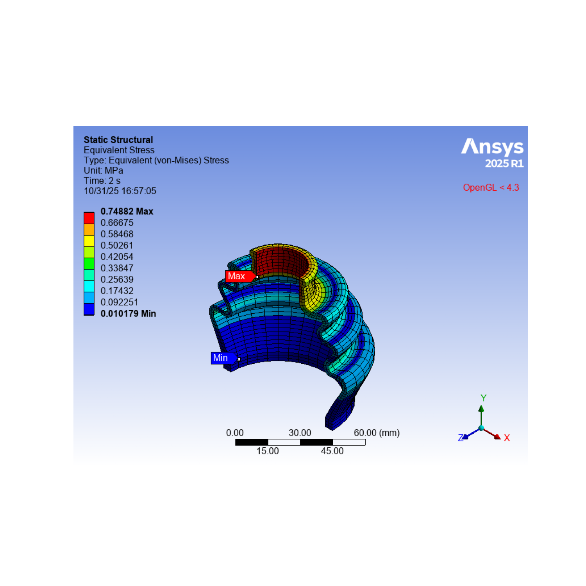

Note
Go to the end to download the full example code.
Nonlinear Analysis of a Rubber Boot Seal Model#
This example demonstrates a nonlinear 3D analysis of a rubber boot seal to:
Create a rigid-flexible contact pair between a rigid shaft and a rubber boot part.
Specify ramped effects using the On Gauss Point Detection Method to update contact stiffness at each iteration.
Specify contact pairs at the inner and outer surfaces of the rubber boot.
Specify non-ramped effects using the Nodal-Projected Normal From Contact Detection Method to update contact stiffness at each iteration.
Import necessary libraries#
import os
from ansys.mechanical.core import launch_mechanical
from ansys.mechanical.core.examples import download_file
from matplotlib import image as mpimg
from matplotlib import pyplot as plt
Launch mechanical#
Launch a new Mechanical session in batch, setting the cleanup_on_exit
argument to False. To close this Mechanical session when finished,
this example must call the mechanical.exit() method.
mechanical = launch_mechanical(batch=True, cleanup_on_exit=False)
print(mechanical)
Ansys Mechanical [Ansys Mechanical Enterprise]
Product Version:252
Software build date: 06/13/2025 11:25:56
Initialize variable for workflow#
Set the part_file_path variable on the server for later use.
Make this variable compatible for Windows, Linux, and Docker containers.
project_directory = mechanical.project_directory
print(f"project directory = {project_directory}")
project directory = /tmp/ANSYS.root.1/AnsysMech189C/Project_Mech_Files/
Download required geometry file#
Download the required file. Print the file path for the geometry file.
geometry_path = download_file(
"example_05_td26_Rubber_Boot_Seal.agdb", "pymechanical", "00_basic"
)
print(f"Downloaded the geometry file to: {geometry_path}")
# Upload the file to the project directory.
mechanical.upload(file_name=geometry_path, file_location_destination=project_directory)
# Build the path relative to project directory.
base_name = os.path.basename(geometry_path)
combined_path = os.path.join(project_directory, base_name)
part_file_path = combined_path.replace("\\", "\\\\")
mechanical.run_python_script(f"part_file_path='{part_file_path}'")
Downloaded the geometry file to: /home/runner/.local/share/ansys_mechanical_core/examples/example_05_td26_Rubber_Boot_Seal.agdb
Uploading example_05_td26_Rubber_Boot_Seal.agdb to dns:///127.0.0.1:10000:/tmp/ANSYS.root.1/AnsysMech189C/Project_Mech_Files/.: 0%| | 0.00/3.02M [00:00<?, ?B/s]
Uploading example_05_td26_Rubber_Boot_Seal.agdb to dns:///127.0.0.1:10000:/tmp/ANSYS.root.1/AnsysMech189C/Project_Mech_Files/.: 100%|██████████| 3.02M/3.02M [00:00<00:00, 475MB/s]
''
Download required material files#
Download the required files. Print the file path for the material file.
mat_path = download_file("example_05_Boot_Mat.xml", "pymechanical", "00_basic")
print(f"Downloaded the material file to: {mat_path}")
# Upload the file to the project directory.
mechanical.upload(file_name=mat_path, file_location_destination=project_directory)
# Build the path relative to project directory.
base_name = os.path.basename(mat_path)
combined_path = os.path.join(project_directory, base_name)
mat_part_file_path = combined_path.replace("\\", "\\\\")
mechanical.run_python_script(f"mat_part_file_path='{mat_part_file_path}'")
# Verify the path.
result = mechanical.run_python_script("part_file_path")
print(f"part_file_path on server: {result}")
Downloaded the material file to: /home/runner/.local/share/ansys_mechanical_core/examples/example_05_Boot_Mat.xml
Uploading example_05_Boot_Mat.xml to dns:///127.0.0.1:10000:/tmp/ANSYS.root.1/AnsysMech189C/Project_Mech_Files/.: 0%| | 0.00/3.20k [00:00<?, ?B/s]
Uploading example_05_Boot_Mat.xml to dns:///127.0.0.1:10000:/tmp/ANSYS.root.1/AnsysMech189C/Project_Mech_Files/.: 100%|██████████| 3.20k/3.20k [00:00<00:00, 15.3MB/s]
part_file_path on server: /tmp/ANSYS.root.1/AnsysMech189C/Project_Mech_Files/example_05_td26_Rubber_Boot_Seal.agdb
Run the script#
Run the Mechanical script to attach the geometry and set up and solve the analysis.
output = mechanical.run_python_script(
"""
import json
import os
# Section 1: Read geometry and material information from the JSON file.
geometry_import_group_11 = Model.GeometryImportGroup
geometry_import_12 = geometry_import_group_11.AddGeometryImport()
geometry_import_12_format = Ansys.Mechanical.DataModel.Enums.GeometryImportPreference. \
Format.Automatic
geometry_import_12_preferences = Ansys.ACT.Mechanical.Utilities.GeometryImportPreferences()
geometry_import_12_preferences.ProcessNamedSelections = True
geometry_import_12_preferences.ProcessCoordinateSystems = True
geometry_import_12.Import(part_file_path, geometry_import_12_format,
geometry_import_12_preferences)
materials = ExtAPI.DataModel.Project.Model.Materials
materials.Import(mat_part_file_path)
# Section 2: Set up the unit system.
ExtAPI.Application.ActiveUnitSystem = MechanicalUnitSystem.StandardNMM
ExtAPI.Application.ActiveAngleUnit = AngleUnitType.Radian
GEOM = Model.Geometry
PRT1 = [x for x in ExtAPI.DataModel.Tree.AllObjects if x.Name == 'Part'][0]
PRT2 = [x for x in ExtAPI.DataModel.Tree.AllObjects if x.Name == 'Solid'][1]
CS_GRP = Model.CoordinateSystems
GCS = CS_GRP.Children[0]
Model.AddStaticStructuralAnalysis()
STAT_STRUC = Model.Analyses[0]
ANA_SETTING = STAT_STRUC.Children[0]
STAT_STRUC_SOLN = STAT_STRUC.Solution
SOLN_INFO = STAT_STRUC_SOLN.SolutionInformation
# Section 3: Define named selection and coordinate system.
NS_GRP = ExtAPI.DataModel.Project.Model.NamedSelections
TOP_FACE = \
[i for i in NS_GRP.GetChildren[Ansys.ACT.Automation.Mechanical.NamedSelection](True)
if i.Name == 'Top_Face'][0]
BOTTOM_FACE = \
[i for i in NS_GRP.GetChildren[Ansys.ACT.Automation.Mechanical.NamedSelection](True)
if i.Name == 'Bottom_Face'][0]
SYMM_FACES30 = \
[i for i in NS_GRP.GetChildren[Ansys.ACT.Automation.Mechanical.NamedSelection](True)
if i.Name == 'Symm_Faces30'][0]
FACES2 = [i for i in NS_GRP.GetChildren[Ansys.ACT.Automation.Mechanical.NamedSelection](True)
if i.Name == 'Faces2'][0]
CYL_FACES2 = \
[i for i in NS_GRP.GetChildren[Ansys.ACT.Automation.Mechanical.NamedSelection](True)
if i.Name == 'Cyl_Faces2'][0]
RUBBER_BODIES30 = \
[i for i in NS_GRP.GetChildren[Ansys.ACT.Automation.Mechanical.NamedSelection](True)
if i.Name == 'Rubber_Bodies30'][0]
INNER_FACES30 = \
[i for i in NS_GRP.GetChildren[Ansys.ACT.Automation.Mechanical.NamedSelection](True)
if i.Name == 'Inner_Faces30'][0]
OUTER_FACES30 = \
[i for i in NS_GRP.GetChildren[Ansys.ACT.Automation.Mechanical.NamedSelection](True)
if i.Name == 'Outer_Faces30'][0]
SHAFT_FACE = \
[i for i in NS_GRP.GetChildren[Ansys.ACT.Automation.Mechanical.NamedSelection](True)
if i.Name == 'Shaft_Face'][0]
SYMM_FACES15 = \
[i for i in NS_GRP.GetChildren[Ansys.ACT.Automation.Mechanical.NamedSelection](True)
if i.Name == 'Symm_Faces15'][0]
LCS1 = CS_GRP.AddCoordinateSystem()
LCS1.OriginY = Quantity('97[mm]')
# Section 4: Define material.
PRT1.Material = 'Boot'
PRT2.StiffnessBehavior = StiffnessBehavior.Rigid
# Section 5: Define connections.
CONN_GRP = ExtAPI.DataModel.Project.Model.Connections
CONT_REG1 = CONN_GRP.AddContactRegion()
CONT_REG1.TargetLocation = SHAFT_FACE
CONT_REG1.SourceLocation = INNER_FACES30
CONT_REG1.ContactType = ContactType.Frictional
CONT_REG1.FrictionCoefficient = 0.2
CONT_REG1.Behavior = ContactBehavior.Asymmetric
CONT_REG1.SmallSliding = ContactSmallSlidingType.Off
CONT_REG1.DetectionMethod = ContactDetectionPoint.OnGaussPoint
CONT_REG1.UpdateStiffness = UpdateContactStiffness.EachIteration
CONT_REG1.InterfaceTreatment = ContactInitialEffect.AddOffsetRampedEffects
CONT_REG1.TargetGeometryCorrection = TargetCorrection.Smoothing
CONT_REG1.TargetOrientation = TargetOrientation.Cylinder
CONT_REG1.TargetStartingPoint = GCS
CONT_REG1.TargetEndingPoint = LCS1
CONTS = CONN_GRP.Children[0]
CONT_REG2 = CONTS.AddContactRegion()
CONT_REG2.SourceLocation = INNER_FACES30
CONT_REG2.TargetLocation = INNER_FACES30
CONT_REG2.ContactType = ContactType.Frictional
CONT_REG2.FrictionCoefficient = 0.2
CONT_REG2.Behavior = ContactBehavior.Asymmetric
CONT_REG2.SmallSliding = ContactSmallSlidingType.Off
CONT_REG2.DetectionMethod = ContactDetectionPoint.NodalProjectedNormalFromContact
CONT_REG2.UpdateStiffness = UpdateContactStiffness.EachIteration
CONT_REG2.NormalStiffnessValueType = ElementControlsNormalStiffnessType.Factor
CONT_REG2.NormalStiffnessFactor = 1
CONT_REG3 = CONTS.AddContactRegion()
CONT_REG3.SourceLocation = OUTER_FACES30
CONT_REG3.TargetLocation = OUTER_FACES30
CONT_REG3.ContactType = ContactType.Frictional
CONT_REG3.FrictionCoefficient = 0.2
CONT_REG3.Behavior = ContactBehavior.Asymmetric
CONT_REG3.SmallSliding = ContactSmallSlidingType.Off
CONT_REG3.DetectionMethod = ContactDetectionPoint.NodalProjectedNormalFromContact
CONT_REG3.UpdateStiffness = UpdateContactStiffness.EachIteration
CONT_REG3.NormalStiffnessValueType = ElementControlsNormalStiffnessType.Factor
CONT_REG3.NormalStiffnessFactor = 1
# Section 6: Define mesh controls.
MSH = Model.Mesh
FACE_MSH = MSH.AddFaceMeshing()
FACE_MSH.Location = SHAFT_FACE
FACE_MSH.InternalNumberOfDivisions = 1
MSH_SIZE = MSH.AddSizing()
MSH_SIZE.Location = SYMM_FACES15
MSH_SIZE.ElementSize = Quantity('2 [mm]')
MSH.ElementOrder = ElementOrder.Linear
MSH.Resolution = 2
MSH.GenerateMesh()
# Section 7: Define remote points' rigid behaviors and scope them
# to the top and bottom faces of rigid shaft.
RMPT01 = Model.AddRemotePoint()
RMPT01.Location = BOTTOM_FACE
RMPT01.Behavior = LoadBehavior.Rigid
RMPT02 = Model.AddRemotePoint()
RMPT02.Location = TOP_FACE
RMPT02.Behavior = LoadBehavior.Rigid
# Section 8: Define analysis settings and set up loads and supports.
ANA_SETTING.Activate()
ANA_SETTING.LargeDeflection = True
ANA_SETTING.Stabilization = StabilizationType.Off
#ANA_SETTING.NumberOfSteps = 3
ANA_SETTING.NumberOfSteps = 2
ANA_SETTING.CurrentStepNumber = 1
ANA_SETTING.AutomaticTimeStepping = AutomaticTimeStepping.On
ANA_SETTING.DefineBy = TimeStepDefineByType.Substeps
ANA_SETTING.InitialSubsteps = 5
ANA_SETTING.MinimumSubsteps = 5
ANA_SETTING.MaximumSubsteps = 1000
ANA_SETTING.StoreResultsAt = TimePointsOptions.EquallySpacedPoints
ANA_SETTING.StoreResulsAtValue = 5
ANA_SETTING.CurrentStepNumber = 2
ANA_SETTING.AutomaticTimeStepping = AutomaticTimeStepping.On
ANA_SETTING.DefineBy = TimeStepDefineByType.Substeps
ANA_SETTING.InitialSubsteps = 10
ANA_SETTING.MinimumSubsteps = 10
ANA_SETTING.MaximumSubsteps = 1000
ANA_SETTING.StoreResultsAt = TimePointsOptions.EquallySpacedPoints
ANA_SETTING.StoreResulsAtValue = 10
ANA_SETTING.CurrentStepNumber = 3
ANA_SETTING.AutomaticTimeStepping = AutomaticTimeStepping.On
ANA_SETTING.DefineBy = TimeStepDefineByType.Substeps
ANA_SETTING.InitialSubsteps = 30
ANA_SETTING.MinimumSubsteps = 30
ANA_SETTING.MaximumSubsteps = 1000
ANA_SETTING.StoreResultsAt = TimePointsOptions.EquallySpacedPoints
ANA_SETTING.StoreResulsAtValue = 20
SOLN_INFO.NewtonRaphsonResiduals = 4
REM_DISP = STAT_STRUC.AddRemoteDisplacement()
REM_DISP.Location = RMPT01
REM_DISP.XComponent.Inputs[0].DiscreteValues = [Quantity("0 [s]"), Quantity("1 [s]"),
Quantity("2 [s]"), Quantity("3 [s]")]
REM_DISP.XComponent.Output.DiscreteValues = [Quantity("0 [mm]"), Quantity("0 [mm]"),
Quantity("0 [mm]"), Quantity("0 [mm]")]
REM_DISP.YComponent.Inputs[0].DiscreteValues = [Quantity("0 [s]"), Quantity("1 [s]"),
Quantity("2 [s]"), Quantity("3 [s]")]
REM_DISP.YComponent.Output.DiscreteValues = [Quantity("0 [mm]"), Quantity("0 [mm]"),
Quantity("-10 [mm]"), Quantity("-10 [mm]")]
REM_DISP.ZComponent.Inputs[0].DiscreteValues = [Quantity("0 [s]"), Quantity("1 [s]"),
Quantity("2 [s]"), Quantity("3 [s]")]
REM_DISP.ZComponent.Output.DiscreteValues = [Quantity("0 [mm]"), Quantity("0 [mm]"),
Quantity("0 [mm]"), Quantity("0 [mm]")]
REM_DISP.RotationX.Inputs[0].DiscreteValues = [Quantity("0 [s]"), Quantity("1 [s]"),
Quantity("2 [s]"), Quantity("3 [s]")]
REM_DISP.RotationX.Output.DiscreteValues = [Quantity("0 [rad]"), Quantity("0 [rad]"),
Quantity("0 [rad]"), Quantity("0 [rad]")]
REM_DISP.RotationY.Inputs[0].DiscreteValues = [Quantity("0 [s]"), Quantity("1 [s]"),
Quantity("2 [s]"), Quantity("3 [s]")]
REM_DISP.RotationY.Output.DiscreteValues = [Quantity("0 [rad]"), Quantity("0 [rad]"),
Quantity("0 [rad]"), Quantity("0 [rad]")]
REM_DISP.RotationZ.Inputs[0].DiscreteValues = [Quantity("0 [s]"), Quantity("1 [s]"),
Quantity("2 [s]"), Quantity("3 [s]")]
REM_DISP.RotationZ.Output.DiscreteValues = [Quantity("0 [rad]"), Quantity("0 [rad]"),
Quantity("0 [rad]"), Quantity("0.55 [rad]")]
FRIC_SUP01 = STAT_STRUC.AddFrictionlessSupport()
FRIC_SUP01.Location = SYMM_FACES30
FRIC_SUP01.Name = "Symmetry_BC"
FRIC_SUP02 = STAT_STRUC.AddFrictionlessSupport()
FRIC_SUP02.Location = FACES2
FRIC_SUP02.Name = "Boot_Bottom_BC"
FRIC_SUP03 = STAT_STRUC.AddFrictionlessSupport()
FRIC_SUP03.Location = CYL_FACES2
FRIC_SUP03.Name = "Boot_Radial_BC"
# Section 9: Add total deformation and equivalent stress.
TOT_DEF = STAT_STRUC.Solution.AddTotalDeformation()
TOT_DEF.Location = RUBBER_BODIES30
EQV_STRS = STAT_STRUC.Solution.AddEquivalentStress()
EQV_STRS.Location = RUBBER_BODIES30
# Section 10: Set the number of processors to 6 using DANSYS.
#testval2 = STAT_STRUC.SolveConfiguration.SolveProcessSettings.MaxNumberOfCores
#STAT_STRUC.SolveConfiguration.SolveProcessSettings.MaxNumberOfCores = 6
# Section 11: Solve for the normal stiffness value set to 1 for self contacts.
# between flexible rubber boot
STAT_STRUC.Solution.Solve(True)
# Section 12: Set isometric view and zoom to fit.
cam = Graphics.Camera
cam.SetSpecificViewOrientation(ViewOrientationType.Iso)
cam.SetFit()
# Section 13: Store post-processing images.
mechdir = STAT_STRUC.Children[0].SolverFilesDirectory
export_path = os.path.join(mechdir, "total_deformation.png")
TOT_DEF.Activate()
Graphics.ExportImage(export_path, GraphicsImageExportFormat.PNG)
export_path2 = os.path.join(mechdir, "equivalent_stress.png")
EQV_STRS.Activate()
Graphics.ExportImage(export_path2, GraphicsImageExportFormat.PNG)
my_results_details = {
"Equivalent_Stress": str(EQV_STRS.Maximum),
"Total_Deformation": str(TOT_DEF.Maximum),
}
json.dumps(my_results_details)
"""
)
print(output)
{"Equivalent_Stress": "0.748823906419917 [MPa]", "Total_Deformation": "10.453093871074408 [mm]"}
Initialize the variable needed for the image directory#
Set the image_dir variable for later use.
Make the variable compatible for Windows, Linux, and Docker containers.
# image_directory_modified = project_directory.replace("\\", "\\\\")
mechanical.run_python_script(f"image_dir=ExtAPI.DataModel.AnalysisList[0].WorkingDir")
# Verify the path for image directory.
result_image_dir_server = mechanical.run_python_script(f"image_dir")
print(f"Images are stored on the server at: {result_image_dir_server}")
Images are stored on the server at: /tmp/ANSYS.root.1/AnsysMech189C/Project_Mech_Files/StaticStructural/
Download the image and plot#
Download one image file from the server to the current working directory and plot using matplotlib.
def get_image_path(image_name):
return os.path.join(result_image_dir_server, image_name)
def display_image(path):
print(f"Printing {path} using matplotlib")
image1 = mpimg.imread(path)
plt.figure(figsize=(15, 15))
plt.axis("off")
plt.imshow(image1)
plt.show()
image_names = ["total_deformation.png", "equivalent_stress.png"]
for image_name in image_names:
image_path_server = get_image_path(image_name)
if image_path_server != "":
current_working_directory = os.getcwd()
local_file_path_list = mechanical.download(
image_path_server, target_dir=current_working_directory
)
image_local_path = local_file_path_list[0]
print(f"Local image path : {image_local_path}")
display_image(image_local_path)
- 
Downloading dns:///127.0.0.1:10000:/tmp/ANSYS.root.1/AnsysMech189C/Project_Mech_Files/StaticStructural/total_deformation.png to /home/runner/work/pymechanical-examples/pymechanical-examples/examples/technology_showcase/total_deformation.png: 0%| | 0.00/100k [00:00<?, ?B/s]
Downloading dns:///127.0.0.1:10000:/tmp/ANSYS.root.1/AnsysMech189C/Project_Mech_Files/StaticStructural/total_deformation.png to /home/runner/work/pymechanical-examples/pymechanical-examples/examples/technology_showcase/total_deformation.png: 100%|██████████| 100k/100k [00:00<00:00, 548MB/s]
Local image path : /home/runner/work/pymechanical-examples/pymechanical-examples/examples/technology_showcase/total_deformation.png
Printing /home/runner/work/pymechanical-examples/pymechanical-examples/examples/technology_showcase/total_deformation.png using matplotlib
Downloading dns:///127.0.0.1:10000:/tmp/ANSYS.root.1/AnsysMech189C/Project_Mech_Files/StaticStructural/equivalent_stress.png to /home/runner/work/pymechanical-examples/pymechanical-examples/examples/technology_showcase/equivalent_stress.png: 0%| | 0.00/107k [00:00<?, ?B/s]
Downloading dns:///127.0.0.1:10000:/tmp/ANSYS.root.1/AnsysMech189C/Project_Mech_Files/StaticStructural/equivalent_stress.png to /home/runner/work/pymechanical-examples/pymechanical-examples/examples/technology_showcase/equivalent_stress.png: 100%|██████████| 107k/107k [00:00<00:00, 567MB/s]
Local image path : /home/runner/work/pymechanical-examples/pymechanical-examples/examples/technology_showcase/equivalent_stress.png
Printing /home/runner/work/pymechanical-examples/pymechanical-examples/examples/technology_showcase/equivalent_stress.png using matplotlib
Download output file from solve and print contents#
Download the solve.out file from the server to the current working
directory and print the contents. Remove the solve.out file.
def get_solve_out_path(mechanical):
"""Get the solve out path and return."""
solve_out_path = ""
for file_path in mechanical.list_files():
if file_path.find("solve.out") != -1:
solve_out_path = file_path
break
return solve_out_path
def write_file_contents_to_console(path):
"""Write file contents to console."""
with open(path, "rt") as file:
for line in file:
print(line, end="")
solve_out_path = get_solve_out_path(mechanical)
if solve_out_path != "":
current_working_directory = os.getcwd()
mechanical.download(solve_out_path, target_dir=current_working_directory)
solve_out_local_path = os.path.join(current_working_directory, "solve.out")
write_file_contents_to_console(solve_out_local_path)
os.remove(solve_out_local_path)
Downloading dns:///127.0.0.1:10000:/tmp/ANSYS.root.1/AnsysMech189C/Project_Mech_Files/StaticStructural/solve.out to /home/runner/work/pymechanical-examples/pymechanical-examples/examples/technology_showcase/solve.out: 0%| | 0.00/136k [00:00<?, ?B/s]
Downloading dns:///127.0.0.1:10000:/tmp/ANSYS.root.1/AnsysMech189C/Project_Mech_Files/StaticStructural/solve.out to /home/runner/work/pymechanical-examples/pymechanical-examples/examples/technology_showcase/solve.out: 100%|██████████| 136k/136k [00:00<00:00, 676MB/s]
Ansys Mechanical Enterprise
*------------------------------------------------------------------*
| |
| W E L C O M E T O T H E A N S Y S (R) P R O G R A M |
| |
*------------------------------------------------------------------*
***************************************************************
* ANSYS MAPDL 2025 R2 LEGAL NOTICES *
***************************************************************
* *
* Copyright 1971-2025 Ansys, Inc. All rights reserved. *
* Unauthorized use, distribution or duplication is *
* prohibited. *
* *
* Ansys is a registered trademark of Ansys, Inc. or its *
* subsidiaries in the United States or other countries. *
* See the Ansys, Inc. online documentation or the Ansys, Inc. *
* documentation CD or online help for the complete Legal *
* Notice. *
* *
***************************************************************
* *
* THIS ANSYS SOFTWARE PRODUCT AND PROGRAM DOCUMENTATION *
* INCLUDE TRADE SECRETS AND CONFIDENTIAL AND PROPRIETARY *
* PRODUCTS OF ANSYS, INC., ITS SUBSIDIARIES, OR LICENSORS. *
* The software products and documentation are furnished by *
* Ansys, Inc. or its subsidiaries under a software license *
* agreement that contains provisions concerning *
* non-disclosure, copying, length and nature of use, *
* compliance with exporting laws, warranties, disclaimers, *
* limitations of liability, and remedies, and other *
* provisions. The software products and documentation may be *
* used, disclosed, transferred, or copied only in accordance *
* with the terms and conditions of that software license *
* agreement. *
* *
* Ansys, Inc. is a UL registered *
* ISO 9001:2015 company. *
* *
***************************************************************
* *
* This product is subject to U.S. laws governing export and *
* re-export. *
* *
* For U.S. Government users, except as specifically granted *
* by the Ansys, Inc. software license agreement, the use, *
* duplication, or disclosure by the United States Government *
* is subject to restrictions stated in the Ansys, Inc. *
* software license agreement and FAR 12.212 (for non-DOD *
* licenses). *
* *
***************************************************************
2025 R2
Point Releases and Patches installed:
Ansys, Inc. License Manager 2025 R2
LS-DYNA 2025 R2
Core WB Files 2025 R2
Mechanical Products 2025 R2
***** MAPDL COMMAND LINE ARGUMENTS *****
BATCH MODE REQUESTED (-b) = NOLIST
INPUT FILE COPY MODE (-c) = COPY
DISTRIBUTED MEMORY PARALLEL REQUESTED
4 PARALLEL PROCESSES REQUESTED WITH SINGLE THREAD PER PROCESS
TOTAL OF 4 CORES REQUESTED
INPUT FILE NAME = /tmp/ANSYS.root.1/AnsysMech189C/Project_Mech_Files/StaticStructural/dummy.dat
OUTPUT FILE NAME = /tmp/ANSYS.root.1/AnsysMech189C/Project_Mech_Files/StaticStructural/solve.out
START-UP FILE MODE = NOREAD
STOP FILE MODE = NOREAD
RELEASE= 2025 R2 BUILD= 25.2 UP20250519 VERSION=LINUX x64
CURRENT JOBNAME=file0 20:53:18 JAN 05, 2026 CP= 0.238
PARAMETER _DS_PROGRESS = 999.0000000
/INPUT FILE= ds.dat LINE= 0
*** NOTE *** CP = 0.341 TIME= 20:53:18
The /CONFIG,NOELDB command is not valid in a distributed memory
parallel solution. Command is ignored.
*GET _WALLSTRT FROM ACTI ITEM=TIME WALL VALUE= 20.8883333
TITLE=
--Static Structural
ACT Extensions:
LSDYNA, 2025.2
5f463412-bd3e-484b-87e7-cbc0a665e474, wbex
SET PARAMETER DIMENSIONS ON _WB_PROJECTSCRATCH_DIR
TYPE=STRI DIMENSIONS= 248 1 1
PARAMETER _WB_PROJECTSCRATCH_DIR(1) = /tmp/ANSYS.root.1/AnsysMech189C/Project_Mech_Files/StaticStructural/
SET PARAMETER DIMENSIONS ON _WB_SOLVERFILES_DIR
TYPE=STRI DIMENSIONS= 248 1 1
PARAMETER _WB_SOLVERFILES_DIR(1) = /tmp/ANSYS.root.1/AnsysMech189C/Project_Mech_Files/StaticStructural/
SET PARAMETER DIMENSIONS ON _WB_USERFILES_DIR
TYPE=STRI DIMENSIONS= 248 1 1
PARAMETER _WB_USERFILES_DIR(1) = /tmp/ANSYS.root.1/AnsysMech189C/Project_Mech_Files/UserFiles/
--- Data in consistent NMM units. See Solving Units in the help system for more
MPA UNITS SPECIFIED FOR INTERNAL
LENGTH = MILLIMETERS (mm)
MASS = TONNE (Mg)
TIME = SECONDS (sec)
TEMPERATURE = CELSIUS (C)
TOFFSET = 273.0
FORCE = NEWTON (N)
HEAT = MILLIJOULES (mJ)
INPUT UNITS ARE ALSO SET TO MPA
*** MAPDL - ENGINEERING ANALYSIS SYSTEM RELEASE 2025 R2 25.2 ***
Ansys Mechanical Enterprise
00000000 VERSION=LINUX x64 20:53:18 JAN 05, 2026 CP= 0.345
--Static Structural
***** MAPDL ANALYSIS DEFINITION (PREP7) *****
*********** Send User Defined Coordinate System(s) ***********
*********** Nodes for the whole assembly ***********
*********** Nodes for all Remote Points ***********
*********** Elements for Body 1 ' B-REP' ***********
*********** Elements for Body 2 ' B-REP' ***********
*********** Elements for Body 3 ' B-REP' ***********
*********** Elements for Body 4 ' B-REP' ***********
*********** Elements for Body 5 ' B-REP' ***********
*********** Elements for Body 6 ' B-REP' ***********
*********** Elements for Body 7 ' B-REP' ***********
*********** Elements for Body 8 ' B-REP' ***********
*********** Elements for Body 9 ' B-REP' ***********
*********** Elements for Body 10 ' B-REP' ***********
*********** Elements for Body 11 ' B-REP' ***********
*********** Elements for Body 12 ' B-REP' ***********
*********** Elements for Body 13 ' B-REP' ***********
*********** Elements for Body 14 ' B-REP' ***********
*********** Elements for Body 15 ' B-REP' ***********
*********** Elements for Body 16 ' B-REP' ***********
*********** Elements for Body 17 ' B-REP' ***********
*********** Elements for Body 18 ' B-REP' ***********
*********** Elements for Body 19 ' B-REP' ***********
*********** Elements for Body 20 ' B-REP' ***********
*********** Elements for Body 21 ' B-REP' ***********
*********** Elements for Body 22 ' B-REP' ***********
*********** Elements for Body 23 ' B-REP' ***********
*********** Elements for Body 24 ' B-REP' ***********
*********** Elements for Body 25 ' B-REP' ***********
*********** Elements for Body 26 ' B-REP' ***********
*********** Elements for Body 27 ' B-REP' ***********
*********** Elements for Body 28 ' B-REP' ***********
*********** Elements for Body 29 ' B-REP' ***********
*********** Elements for Body 30 ' B-REP' ***********
*********** Elements for Body 31 'Solid' ***********
*********** Send Body as a Rigid Body ***********
*********** Set Reference Temperature ***********
*********** Send Materials ***********
*********** Create Contact "Contact Region" ***********
Real Constant Set For Above Contact Is 33 & 32
*********** Create Contact "Contact Region 2" ***********
Real Constant Set For Above Contact Is 35 & 34
*********** Create Contact "Contact Region 3" ***********
Real Constant Set For Above Contact Is 37 & 36
*********** Send Named Selection as Node Component ***********
*********** Send Named Selection as Node Component ***********
*********** Send Named Selection as Node Component ***********
*********** Send Named Selection as Element Component ***********
*********** Send Named Selection as Node Component ***********
*********** Send Named Selection as Node Component ***********
*********** Send Named Selection as Node Component ***********
*********** Send Named Selection as Node Component ***********
********* Frictionless Supports X *********
********* Frictionless Supports Y *********
********* Frictionless Supports Z *********
*********** Node Rotations ***********
*********** Create Remote Point "Remote Point" ***********
*********** Create Remote Point "Remote Point 2" ***********
*********** Construct Remote Displacement ***********
*** Create a component for all remote displacements ***
***** ROUTINE COMPLETED ***** CP = 0.502
--- Number of total nodes = 4254
--- Number of contact elements = 6615
--- Number of spring elements = 0
--- Number of bearing elements = 0
--- Number of solid elements = 2656
--- Number of condensed parts = 0
--- Number of total elements = 9260
*GET _WALLBSOL FROM ACTI ITEM=TIME WALL VALUE= 20.8883333
****************************************************************************
************************* SOLUTION ********************************
****************************************************************************
***** MAPDL SOLUTION ROUTINE *****
PERFORM A STATIC ANALYSIS
THIS WILL BE A NEW ANALYSIS
LARGE DEFORMATION ANALYSIS
PARAMETER _THICKRATIO = 0.000000000
USE SPARSE MATRIX DIRECT SOLVER
CONTACT INFORMATION PRINTOUT LEVEL 1
CHECK INITIAL OPEN/CLOSED STATUS OF SELECTED CONTACT ELEMENTS
AND LIST DETAILED CONTACT PAIR INFORMATION
SPLIT CONTACT SURFACES AT SOLVE PHASE
NUMBER OF SPLITTING TBD BY PROGRAM
DO NOT COMBINE ELEMENT MATRIX FILES (.emat) AFTER DISTRIBUTED PARALLEL SOLUTION
DO NOT COMBINE ELEMENT SAVE DATA FILES (.esav) AFTER DISTRIBUTED PARALLEL SOLUTION
NLDIAG: Nonlinear diagnostics CONT option is set to ON.
Writing frequency : each ITERATION.
DEFINE RESTART CONTROL FOR LOADSTEP LAST
AT FREQUENCY OF LAST AND NUMBER FOR OVERWRITE IS -1
DELETE RESTART FILES OF ENDSTEP
****************************************************
******************* SOLVE FOR LS 1 OF 2 ****************
SPECIFIED CONSTRAINT UX FOR SELECTED NODES 4253 TO 4253 BY 1
SET ACCORDING TO TABLE PARAMETER = _LOADVARI133UX
SPECIFIED CONSTRAINT UY FOR SELECTED NODES 4253 TO 4253 BY 1
SET ACCORDING TO TABLE PARAMETER = _LOADVARI133UY
SPECIFIED CONSTRAINT UZ FOR SELECTED NODES 4253 TO 4253 BY 1
SET ACCORDING TO TABLE PARAMETER = _LOADVARI133UZ
SPECIFIED CONSTRAINT ROTX FOR SELECTED NODES 4253 TO 4253 BY 1
SET ACCORDING TO TABLE PARAMETER = _LOADVARI133ROTX
SPECIFIED CONSTRAINT ROTY FOR SELECTED NODES 4253 TO 4253 BY 1
SET ACCORDING TO TABLE PARAMETER = _LOADVARI133ROTY
SPECIFIED CONSTRAINT ROTZ FOR SELECTED NODES 4253 TO 4253 BY 1
SET ACCORDING TO TABLE PARAMETER = _LOADVARI133ROTZ
PRINTOUT RESUMED BY /GOP
USE AUTOMATIC TIME STEPPING THIS LOAD STEP
USE 30 SUBSTEPS INITIALLY THIS LOAD STEP FOR ALL DEGREES OF FREEDOM
FOR AUTOMATIC TIME STEPPING:
USE 1000 SUBSTEPS AS A MAXIMUM
USE 30 SUBSTEPS AS A MINIMUM
TIME= 1.0000
ERASE THE CURRENT DATABASE OUTPUT CONTROL TABLE.
WRITE ALL ITEMS TO THE DATABASE WITH A FREQUENCY OF NONE
FOR ALL APPLICABLE ENTITIES
WRITE NSOL ITEMS TO THE DATABASE WITH A FREQUENCY OF -20
FOR ALL APPLICABLE ENTITIES
WRITE RSOL ITEMS TO THE DATABASE WITH A FREQUENCY OF -20
FOR ALL APPLICABLE ENTITIES
WRITE EANG ITEMS TO THE DATABASE WITH A FREQUENCY OF -20
FOR ALL APPLICABLE ENTITIES
WRITE ETMP ITEMS TO THE DATABASE WITH A FREQUENCY OF -20
FOR ALL APPLICABLE ENTITIES
WRITE VENG ITEMS TO THE DATABASE WITH A FREQUENCY OF -20
FOR ALL APPLICABLE ENTITIES
WRITE STRS ITEMS TO THE DATABASE WITH A FREQUENCY OF -20
FOR ALL APPLICABLE ENTITIES
WRITE EPEL ITEMS TO THE DATABASE WITH A FREQUENCY OF -20
FOR ALL APPLICABLE ENTITIES
WRITE EPPL ITEMS TO THE DATABASE WITH A FREQUENCY OF -20
FOR ALL APPLICABLE ENTITIES
WRITE CONT ITEMS TO THE DATABASE WITH A FREQUENCY OF -20
FOR ALL APPLICABLE ENTITIES
PRINTOUT RESUMED BY /GOP
WRITE MISC ITEMS TO THE DATABASE WITH A FREQUENCY OF -20
FOR THE ENTITIES DEFINED BY COMPONENT _ELMISC
NONLINEAR STABILIZATION CONTROL:
KEY=OFF
NLDIAG: Nonlinear diagnostics NRRE option is set to ON.
The number of files/iterations to be saved for NRRE nonlinear diagnostics has been set to 4
*GET ANSINTER_ FROM ACTI ITEM=INT VALUE= 0.00000000
*IF ANSINTER_ ( = 0.00000 ) NE
0 ( = 0.00000 ) THEN
*ENDIF
*** NOTE *** CP = 0.607 TIME= 20:53:19
The automatic domain decomposition logic has selected the MESH domain
decomposition method with 4 processes per solution.
***** MAPDL SOLVE COMMAND *****
*** WARNING *** CP = 0.649 TIME= 20:53:19
Element shape checking is currently inactive. Issue SHPP,ON or
SHPP,WARN to reactivate, if desired.
*** NOTE *** CP = 0.690 TIME= 20:53:19
The model data was checked and warning messages were found.
Please review output or errors file (
/tmp/ANSYS.root.1/AnsysMech189C/Project_Mech_Files/StaticStructural/fil
le0.err ) for these warning messages.
*** SELECTION OF ELEMENT TECHNOLOGIES FOR APPLICABLE ELEMENTS ***
--- GIVE SUGGESTIONS AND RESET THE KEY OPTIONS ---
ELEMENT TYPE 1 IS SOLID185. KEYOPT(2) IS ALREADY SET AS SUGGESTED AND NO
RESETTING IS NEEDED.
ELEMENT TYPE 2 IS SOLID185. KEYOPT(2) IS ALREADY SET AS SUGGESTED AND NO
RESETTING IS NEEDED.
ELEMENT TYPE 3 IS SOLID185. KEYOPT(2) IS ALREADY SET AS SUGGESTED AND NO
RESETTING IS NEEDED.
ELEMENT TYPE 4 IS SOLID185. KEYOPT(2) IS ALREADY SET AS SUGGESTED AND NO
RESETTING IS NEEDED.
ELEMENT TYPE 5 IS SOLID185. KEYOPT(2) IS ALREADY SET AS SUGGESTED AND NO
RESETTING IS NEEDED.
ELEMENT TYPE 6 IS SOLID185. KEYOPT(2) IS ALREADY SET AS SUGGESTED AND NO
RESETTING IS NEEDED.
ELEMENT TYPE 7 IS SOLID185. KEYOPT(2) IS ALREADY SET AS SUGGESTED AND NO
RESETTING IS NEEDED.
ELEMENT TYPE 8 IS SOLID185. KEYOPT(2) IS ALREADY SET AS SUGGESTED AND NO
RESETTING IS NEEDED.
ELEMENT TYPE 9 IS SOLID185. KEYOPT(2) IS ALREADY SET AS SUGGESTED AND NO
RESETTING IS NEEDED.
ELEMENT TYPE 10 IS SOLID185. KEYOPT(2) IS ALREADY SET AS SUGGESTED AND NO
RESETTING IS NEEDED.
ELEMENT TYPE 11 IS SOLID185. KEYOPT(2) IS ALREADY SET AS SUGGESTED AND NO
RESETTING IS NEEDED.
ELEMENT TYPE 12 IS SOLID185. KEYOPT(2) IS ALREADY SET AS SUGGESTED AND NO
RESETTING IS NEEDED.
ELEMENT TYPE 13 IS SOLID185. KEYOPT(2) IS ALREADY SET AS SUGGESTED AND NO
RESETTING IS NEEDED.
ELEMENT TYPE 14 IS SOLID185. KEYOPT(2) IS ALREADY SET AS SUGGESTED AND NO
RESETTING IS NEEDED.
ELEMENT TYPE 15 IS SOLID185. KEYOPT(2) IS ALREADY SET AS SUGGESTED AND NO
RESETTING IS NEEDED.
ELEMENT TYPE 16 IS SOLID185. KEYOPT(2) IS ALREADY SET AS SUGGESTED AND NO
RESETTING IS NEEDED.
ELEMENT TYPE 17 IS SOLID185. KEYOPT(2) IS ALREADY SET AS SUGGESTED AND NO
RESETTING IS NEEDED.
ELEMENT TYPE 18 IS SOLID185. KEYOPT(2) IS ALREADY SET AS SUGGESTED AND NO
RESETTING IS NEEDED.
ELEMENT TYPE 19 IS SOLID185. KEYOPT(2) IS ALREADY SET AS SUGGESTED AND NO
RESETTING IS NEEDED.
ELEMENT TYPE 20 IS SOLID185. KEYOPT(2) IS ALREADY SET AS SUGGESTED AND NO
RESETTING IS NEEDED.
ELEMENT TYPE 21 IS SOLID185. KEYOPT(2) IS ALREADY SET AS SUGGESTED AND NO
RESETTING IS NEEDED.
ELEMENT TYPE 22 IS SOLID185. KEYOPT(2) IS ALREADY SET AS SUGGESTED AND NO
RESETTING IS NEEDED.
ELEMENT TYPE 23 IS SOLID185. KEYOPT(2) IS ALREADY SET AS SUGGESTED AND NO
RESETTING IS NEEDED.
ELEMENT TYPE 24 IS SOLID185. KEYOPT(2) IS ALREADY SET AS SUGGESTED AND NO
RESETTING IS NEEDED.
ELEMENT TYPE 25 IS SOLID185. KEYOPT(2) IS ALREADY SET AS SUGGESTED AND NO
RESETTING IS NEEDED.
ELEMENT TYPE 26 IS SOLID185. KEYOPT(2) IS ALREADY SET AS SUGGESTED AND NO
RESETTING IS NEEDED.
ELEMENT TYPE 27 IS SOLID185. KEYOPT(2) IS ALREADY SET AS SUGGESTED AND NO
RESETTING IS NEEDED.
ELEMENT TYPE 28 IS SOLID185. KEYOPT(2) IS ALREADY SET AS SUGGESTED AND NO
RESETTING IS NEEDED.
ELEMENT TYPE 29 IS SOLID185. KEYOPT(2) IS ALREADY SET AS SUGGESTED AND NO
RESETTING IS NEEDED.
ELEMENT TYPE 30 IS SOLID185. KEYOPT(2) IS ALREADY SET AS SUGGESTED AND NO
RESETTING IS NEEDED.
*** MAPDL - ENGINEERING ANALYSIS SYSTEM RELEASE 2025 R2 25.2 ***
Ansys Mechanical Enterprise
00000000 VERSION=LINUX x64 20:53:19 JAN 05, 2026 CP= 0.714
--Static Structural
S O L U T I O N O P T I O N S
PROBLEM DIMENSIONALITY. . . . . . . . . . . . .3-D
DEGREES OF FREEDOM. . . . . . UX UY UZ ROTX ROTY ROTZ
ANALYSIS TYPE . . . . . . . . . . . . . . . . .STATIC (STEADY-STATE)
OFFSET TEMPERATURE FROM ABSOLUTE ZERO . . . . . 273.15
NONLINEAR GEOMETRIC EFFECTS . . . . . . . . . .ON
EQUATION SOLVER OPTION. . . . . . . . . . . . .SPARSE
NEWTON-RAPHSON OPTION . . . . . . . . . . . . .PROGRAM CHOSEN
GLOBALLY ASSEMBLED MATRIX . . . . . . . . . . .SYMMETRIC
*** NOTE *** CP = 0.812 TIME= 20:53:19
This nonlinear analysis defaults to using the full Newton-Raphson
solution procedure. This can be modified using the NROPT command.
TRIM CONTACT/TARGET SURFACE
*** NOTE *** CP = 0.889 TIME= 20:53:19
Internal nodes from 4255 to 4256 are created.
2 internal nodes are used for handling degrees of freedom on pilot
nodes of rigid target surfaces.
*** NOTE *** CP = 0.999 TIME= 20:53:19
Internal nodes from 4255 to 4256 are created.
2 internal nodes are used for handling degrees of freedom on pilot
nodes of rigid target surfaces.
*** WARNING *** CP = 1.857 TIME= 20:53:19
Overconstraint may occur for Lagrange multiplier or MPC based contact
algorithm.
*** WARNING *** CP = 1.857 TIME= 20:53:19
Boundary conditions, coupling, and/or constraint equations have been
applied on certain contact nodes (for example 4253).
START TRIMMING SMALL/BONDED CONTACT PAIRS FOR DMP RUN.
CHECK INITIAL OPEN/CLOSED STATUS OF SELECTED CONTACT ELEMENTS
AND LIST DETAILED CONTACT PAIR INFORMATION
*** NOTE *** CP = 1.926 TIME= 20:53:19
Internal nodes from 4255 to 4256 are created.
2 internal nodes are used for handling degrees of freedom on pilot
nodes of rigid target surfaces.
*** NOTE *** CP = 2.001 TIME= 20:53:19
Internal nodes from 4255 to 4256 are created.
2 internal nodes are used for handling degrees of freedom on pilot
nodes of rigid target surfaces.
*** WARNING *** CP = 2.311 TIME= 20:53:19
Overconstraint may occur for Lagrange multiplier or MPC based contact
algorithm.
*** WARNING *** CP = 2.311 TIME= 20:53:19
Boundary conditions, coupling, and/or constraint equations have been
applied on certain contact nodes (for example 4253).
SPLITTING CONTACT SURFACES WITH A CONNECTED REGION
CONTACT PAIR ASSOCIATED WITH REAL CONSTANT 32 SPLIT INTO 2 NEW PAIRS
ASSOCIATED WITH REAL CONSTANTS 39 - 39
CONTACT PAIR ASSOCIATED WITH REAL CONSTANT 34 SPLIT INTO 2 NEW PAIRS
ASSOCIATED WITH REAL CONSTANTS 40 - 40
CONTACT PAIR ASSOCIATED WITH REAL CONSTANT 36 SPLIT INTO 2 NEW PAIRS
ASSOCIATED WITH REAL CONSTANTS 41 - 41
*** NOTE *** CP = 2.439 TIME= 20:53:19
Rotational degrees of freedom ROTX+ROTY+ROTZ have been activated for
pilot node 4252.
NEW CONTACT ELEMENTS FROM 13646 TO 13805 WERE CREATED TO HANDLE OVERLAPPING LAYERS
NEW TARGET ELEMENTS FROM 13806 TO 16461 WERE CREATED TO HANDLE
THE SPLIT CONTACT PAIRS
*** NOTE *** CP = 2.505 TIME= 20:53:19
Internal nodes from 4255 to 4257 are created.
3 internal nodes are used for handling degrees of freedom on pilot
nodes of rigid target surfaces.
*** NOTE *** CP = 2.580 TIME= 20:53:19
Internal nodes from 4255 to 4257 are created.
3 internal nodes are used for handling degrees of freedom on pilot
nodes of rigid target surfaces.
*WARNING*: The self contact pair specified by real constant set 34 also
overlaps with another symmetric contact pair (e.g. 40).
*WARNING*: Some rigid target elements (e.g.13644) in real constant set
38 overlap with other MPC/Lagrange based elements (e.g.13821) in real
constant set 32 which can cause overconstraint.
*** NOTE *** CP = 3.103 TIME= 20:53:19
Smoothing on certain target nodes (e.g.1837) for pair ID 36 may have
accuracy issue. Please verify element normal of connected target
elements (e.g.12323 & 12333).
*** NOTE *** CP = 3.452 TIME= 20:53:19
Rigid-deformable contact pair identified by real constant set 32 and
contact element type 32 has been set up. The degrees of freedom of
the rigid surface are driven by the pilot node 4252.
Boundary conditions can be applied on any target node.
This pair will be merged with other pair defined by real constant set
39.
The current pair was split from a base pair (real ID 32).
Contact algorithm: Augmented Lagrange method
Contact detection at: Gauss integration point
Contact stiffness factor FKN 1.0000
The resulting initial contact stiffness 54.447
Default penetration tolerance factor FTOLN 0.10000
The resulting penetration tolerance 0.16530
Max. initial friction coefficient MU 0.20000
Default tangent stiffness factor FKT 1.0000
Default elastic slip factor SLTOL 0.10000E-01
The resulting elastic slip tolerance 0.34688E-01
Update contact stiffness at each iteration
Default Max. friction stress TAUMAX 0.10000E+21
Average contact surface length 3.4688
Average contact pair depth 1.6530
Average target surface length 51.411
Default pinball region factor PINB 4.0000
The resulting pinball region 6.6120
All target elements use a cylindrical geometry correction
Initial penetration will be ramped during the first load step.
*** NOTE *** CP = 3.452 TIME= 20:53:19
Max. Initial penetration 2.04152853 was detected between contact
element 7054 and target element 8355.
You may move entire target surface by : x= 0, y= 0, z= 0,to reduce
initial penetration.
****************************************
*** NOTE *** CP = 3.452 TIME= 20:53:19
Rigid-deformable contact pair identified by real constant set 39 and
contact element type 32 has been set up. The degrees of freedom of
the rigid surface are driven by the pilot node 4252.
Boundary conditions can be applied on any target node.
This pair will be merged with other pair defined by real constant set
32.
*WARNING*: Certain rigid elements (for example 13821&13644) overlap
each other.
The current pair was split from a base pair (real ID 32).
Contact algorithm: Augmented Lagrange method
Contact detection at: Gauss integration point
Contact stiffness factor FKN 1.0000
The resulting initial contact stiffness 54.447
Default penetration tolerance factor FTOLN 0.10000
The resulting penetration tolerance 0.16530
Max. initial friction coefficient MU 0.20000
Default tangent stiffness factor FKT 1.0000
Default elastic slip factor SLTOL 0.10000E-01
The resulting elastic slip tolerance 0.34688E-01
Update contact stiffness at each iteration
Default Max. friction stress TAUMAX 0.10000E+21
Average contact surface length 3.4688
Average contact pair depth 1.6530
Average target surface length 51.411
Default pinball region factor PINB 4.0000
The resulting pinball region 6.6120
All target elements use a cylindrical geometry correction
Initial penetration will be ramped during the first load step.
*** NOTE *** CP = 3.452 TIME= 20:53:19
Max. Initial penetration 2.04152853 was detected between contact
element 7054 and target element 8355.
You may move entire target surface by : x= -1.94952245, y=
2.953205328E-02, z= 0.605251043,to reduce initial penetration.
****************************************
*** NOTE *** CP = 3.453 TIME= 20:53:19
Self Deformable- deformable contact pair identified by real constant
set 34 and contact element type 34 has been set up.
The current pair was split from a base pair (real ID 34).
Contact algorithm: Augmented Lagrange method
Contact detection at: nodal point (surface projection based)
Contact stiffness factor FKN 1.0000
The resulting initial contact stiffness 27.223
Default penetration tolerance factor FTOLN 0.10000
The resulting penetration tolerance 0.16530
Max. initial friction coefficient MU 0.20000
Default tangent stiffness factor FKT 1.0000
Default elastic slip factor SLTOL 0.10000E-01
The resulting elastic slip tolerance 0.34688E-01
Update contact stiffness at each iteration
Default Max. friction stress TAUMAX 0.10000E+21
Average contact surface length 3.4688
Average contact pair depth 1.6530
Average target surface length 3.1390
Default pinball region factor PINB 1.0000
The resulting pinball region 0.82650
*WARNING*: Initial penetration is included.
*** NOTE *** CP = 3.453 TIME= 20:53:19
No contact was detected for this contact pair.
****************************************
*** NOTE *** CP = 3.453 TIME= 20:53:19
Self Deformable- deformable contact pair identified by real constant
set 40 and contact element type 34 has been set up.
The current pair was split from a base pair (real ID 34).
Contact algorithm: Augmented Lagrange method
Contact detection at: nodal point (surface projection based)
Contact stiffness factor FKN 1.0000
The resulting initial contact stiffness 27.223
Default penetration tolerance factor FTOLN 0.10000
The resulting penetration tolerance 0.16530
Max. initial friction coefficient MU 0.20000
Default tangent stiffness factor FKT 1.0000
Default elastic slip factor SLTOL 0.10000E-01
The resulting elastic slip tolerance 0.34688E-01
Update contact stiffness at each iteration
Default Max. friction stress TAUMAX 0.10000E+21
Average contact surface length 3.4688
Average contact pair depth 1.6530
Average target surface length 3.1390
Default pinball region factor PINB 1.0000
The resulting pinball region 0.82650
*WARNING*: Initial penetration is included.
*** NOTE *** CP = 3.453 TIME= 20:53:19
No contact was detected for this contact pair.
****************************************
*** NOTE *** CP = 3.453 TIME= 20:53:19
Self Deformable- deformable contact pair identified by real constant
set 36 and contact element type 36 has been set up.
The current pair was split from a base pair (real ID 36).
Contact algorithm: Augmented Lagrange method
Contact detection at: nodal point (surface projection based)
*WARNING*: Smoothing on certain contact/target nodes (for example 1837)
may have an accuracy issue. You may switch contact and target
surfaces, or split the current pair into multiple pairs, or use Gauss
detection.
Contact stiffness factor FKN 1.0000
The resulting initial contact stiffness 28.826
Default penetration tolerance factor FTOLN 0.10000
The resulting penetration tolerance 0.15611
Max. initial friction coefficient MU 0.20000
Default tangent stiffness factor FKT 1.0000
Default elastic slip factor SLTOL 0.10000E-01
The resulting elastic slip tolerance 0.37730E-01
Update contact stiffness at each iteration
Default Max. friction stress TAUMAX 0.10000E+21
Average contact surface length 3.7730
Average contact pair depth 1.5611
Average target surface length 3.3864
Default pinball region factor PINB 1.0000
The resulting pinball region 0.78054
*WARNING*: Initial penetration is included.
*** NOTE *** CP = 3.453 TIME= 20:53:19
No contact was detected for this contact pair.
****************************************
*** NOTE *** CP = 3.453 TIME= 20:53:19
Self Deformable- deformable contact pair identified by real constant
set 41 and contact element type 36 has been set up.
The current pair was split from a base pair (real ID 36).
Contact algorithm: Augmented Lagrange method
Contact detection at: nodal point (surface projection based)
*WARNING*: Smoothing on certain contact/target nodes (for example 1837)
may have an accuracy issue. You may switch contact and target
surfaces, or split the current pair into multiple pairs, or use Gauss
detection.
Contact stiffness factor FKN 1.0000
The resulting initial contact stiffness 28.826
Default penetration tolerance factor FTOLN 0.10000
The resulting penetration tolerance 0.15611
Max. initial friction coefficient MU 0.20000
Default tangent stiffness factor FKT 1.0000
Default elastic slip factor SLTOL 0.10000E-01
The resulting elastic slip tolerance 0.37730E-01
Update contact stiffness at each iteration
Default Max. friction stress TAUMAX 0.10000E+21
Average contact surface length 3.7730
Average contact pair depth 1.5611
Average target surface length 3.3864
Default pinball region factor PINB 1.0000
The resulting pinball region 0.78054
*WARNING*: Initial penetration is included.
*** NOTE *** CP = 3.453 TIME= 20:53:19
No contact was detected for this contact pair.
****************************************
*** NOTE *** CP = 3.453 TIME= 20:53:19
Rigid target surface identified by real constant set 38. The degrees
of freedom of the rigid surface are driven by the pilot node 4252.
Internal MPC will be built.
Boundary conditions can be applied on any target node.
The rigid surface does not overlap other elements.
This pair will be merged with other pair defined by real constant set
32.
The used degrees of freedom set is UX UY UZ ROTX ROTY ROTZ
*WARNING*: Boundary conditions, coupling, and/or constraint equations
have been applied on certain target nodes (for example 4253).
*WARNING*: Certain rigid elements (for example 13645&13821) overlap
each other.
****************************************
*** WARNING *** CP = 3.453 TIME= 20:53:19
Overconstraint may occur for Lagrange multiplier or MPC based contact
algorithm.
The reasons for possible overconstraint are:
*** WARNING *** CP = 3.453 TIME= 20:53:19
Boundary conditions, coupling, and/or constraint equations have been
applied on certain contact nodes (for example 4253).
*** WARNING *** CP = 3.453 TIME= 20:53:19
Certain contact elements (for example 13645 & 13821) overlap with
other.
****************************************
*** NOTE *** CP = 3.509 TIME= 20:53:19
Internal nodes from 4255 to 4257 are created.
3 internal nodes are used for handling degrees of freedom on pilot
nodes of rigid target surfaces.
D I S T R I B U T E D D O M A I N D E C O M P O S E R
...Number of elements: 12076
...Number of nodes: 4257
...Decompose to 4 CPU domains
...Element load balance ratio = 1.275
L O A D S T E P O P T I O N S
LOAD STEP NUMBER. . . . . . . . . . . . . . . . 1
TIME AT END OF THE LOAD STEP. . . . . . . . . . 1.0000
AUTOMATIC TIME STEPPING . . . . . . . . . . . . ON
INITIAL NUMBER OF SUBSTEPS . . . . . . . . . 30
MAXIMUM NUMBER OF SUBSTEPS . . . . . . . . . 1000
MINIMUM NUMBER OF SUBSTEPS . . . . . . . . . 30
MAXIMUM NUMBER OF EQUILIBRIUM ITERATIONS. . . . 15
STEP CHANGE BOUNDARY CONDITIONS . . . . . . . . NO
STRESS-STIFFENING . . . . . . . . . . . . . . . ON
TERMINATE ANALYSIS IF NOT CONVERGED . . . . . .YES (EXIT)
CONVERGENCE CONTROLS. . . . . . . . . . . . . .USE DEFAULTS
PRINT OUTPUT CONTROLS . . . . . . . . . . . . .NO PRINTOUT
DATABASE OUTPUT CONTROLS
ITEM FREQUENCY COMPONENT
ALL NONE
NSOL -20
RSOL -20
EANG -20
ETMP -20
VENG -20
STRS -20
EPEL -20
EPPL -20
CONT -20
MISC -20 _ELMISC
SOLUTION MONITORING INFO IS WRITTEN TO FILE= file.mntr
*WARNING*: Node 4252 is applied on different contact pairs (real ID 32
& 32) as the pilot node. These two pairs will be merged.
*WARNING*: Node 4225 has been used on different contact pairs (real ID
32 & 32). These two pairs will be merged. Please check the model
carefully.
*WARNING*: Some rigid target elements (e.g.13644) in real constant set
38 overlap with other MPC/Lagrange based elements (e.g.8362) in real
constant set 32 which can cause overconstraint.
*** NOTE *** CP = 4.248 TIME= 20:53:19
Rigid-deformable contact pair identified by real constant set 39 and
contact element type 32 has been set up. The degrees of freedom of
the rigid surface are driven by the pilot node 4252.
Boundary conditions can be applied on any target node.
This pair will be merged with other pair defined by real constant set
32.
The current pair was split from a base pair (real ID 32).
Contact algorithm: Augmented Lagrange method
Contact detection at: Gauss integration point
Contact stiffness factor FKN 1.0000
The resulting initial contact stiffness 54.447
Default penetration tolerance factor FTOLN 0.10000
The resulting penetration tolerance 0.16530
Max. initial friction coefficient MU 0.20000
Default tangent stiffness factor FKT 1.0000
Default elastic slip factor SLTOL 0.10000E-01
The resulting elastic slip tolerance 0.34688E-01
Update contact stiffness at each iteration
Default Max. friction stress TAUMAX 0.10000E+21
Average contact surface length 3.4688
Average contact pair depth 1.6530
Average target surface length 51.411
Default pinball region factor PINB 4.0000
The resulting pinball region 6.6120
All target elements use a cylindrical geometry correction
Initial penetration will be ramped during the first load step.
*** NOTE *** CP = 4.249 TIME= 20:53:19
Max. Initial penetration 2.04152853 was detected between contact
element 7054 and target element 8355.
You may move entire target surface by : x= -1.94952245, y=
2.953205328E-02, z= 0.605251043,to reduce initial penetration.
****************************************
*** NOTE *** CP = 4.249 TIME= 20:53:19
Rigid-deformable contact pair identified by real constant set 32 and
contact element type 32 has been set up. The degrees of freedom of
the rigid surface are driven by the pilot node 4252.
Boundary conditions can be applied on any target node.
This pair will be merged with other pair defined by real constant set
39.
*WARNING*: Certain rigid elements (for example 8362&13644) overlap each
other.
The current pair was split from a base pair (real ID 32).
Contact algorithm: Augmented Lagrange method
Contact detection at: Gauss integration point
Contact stiffness factor FKN 1.0000
The resulting initial contact stiffness 54.447
Default penetration tolerance factor FTOLN 0.10000
The resulting penetration tolerance 0.16530
Max. initial friction coefficient MU 0.20000
Default tangent stiffness factor FKT 1.0000
Default elastic slip factor SLTOL 0.10000E-01
The resulting elastic slip tolerance 0.34688E-01
Update contact stiffness at each iteration
Default Max. friction stress TAUMAX 0.10000E+21
Average contact surface length 3.4688
Average contact pair depth 1.6530
Average target surface length 51.411
Default pinball region factor PINB 4.0000
The resulting pinball region 6.6120
All target elements use a cylindrical geometry correction
Initial penetration will be ramped during the first load step.
*** NOTE *** CP = 4.250 TIME= 20:53:19
No contact was detected for this contact pair.
****************************************
*** NOTE *** CP = 4.250 TIME= 20:53:19
Rigid target surface identified by real constant set 38. The degrees
of freedom of the rigid surface are driven by the pilot node 4252.
Internal MPC will be built.
Boundary conditions can be applied on any target node.
This pair will be merged with other pair defined by real constant set
39.
The used degrees of freedom set is UX UY UZ ROTX ROTY ROTZ
*WARNING*: Boundary conditions, coupling, and/or constraint equations
have been applied on certain target nodes (for example 4253).
*WARNING*: Certain rigid elements (for example 13645&8362) overlap each
other.
****************************************
MAXIMUM NUMBER OF EQUILIBRIUM ITERATIONS HAS BEEN MODIFIED
TO BE, NEQIT = 25, BY SOLUTION CONTROL LOGIC.
The FEA model contains 0 external CE equations and 12 internal CE
equations.
*************************************************
SUMMARY FOR CONTACT PAIR IDENTIFIED BY REAL CONSTANT SET 39
Max. Penetration of -6.805095096E-02 has been detected between contact
element 7054 and target element 8355.
Max. Geometrical penetration of -2.04152853 has been detected between
contact element 7799 and target element 8361.
For total 1320 contact elements, there are 200 elements are in contact.
There are 200 elements are in sticking.
Contacting area 691.565258.
Max. Pinball distance 6.61198608.
One of the contact searching regions contains at least 9 target
elements.
Max. Pressure/force 0.400937727.
Max. Normal stiffness 5.89172849.
Min. Normal stiffness 5.89172849.
Max. Tangential stiffness 2.31166926.
Min. Tangential stiffness 0.466810091.
*************************************************
*************************************************
SUMMARY FOR CONTACT PAIR IDENTIFIED BY REAL CONSTANT SET 32
Max. Penetration of -6.805095096E-02 has been detected between contact
element 7054 and target element 8355.
Max. Geometrical penetration of -2.04152853 has been detected between
contact element 7799 and target element 8361.
Max. Pinball distance 6.61198608.
Contact pair force norm 160.090598 and criterion 16.0090601.
*************************************************
*********** PRECISE MASS SUMMARY ***********
TOTAL RIGID BODY MASS MATRIX ABOUT ORIGIN
Translational mass | Coupled translational/rotational mass
0.46886E-03 0.0000 0.0000 | 0.0000 0.29956E-19 -0.22740E-01
0.0000 0.46886E-03 0.0000 | -0.29956E-19 0.0000 0.52623E-19
0.0000 0.0000 0.46886E-03 | 0.22740E-01 -0.52623E-19 0.0000
------------------------------------------ | ------------------------------------------
| Rotational mass (inertia)
| 1.4914 -0.25522E-17 -0.33621E-35
| -0.25522E-17 0.45484E-01 -0.14529E-17
| -0.33621E-35 -0.14529E-17 1.4914
TOTAL MASS = 0.46886E-03
The mass principal axes coincide with the global Cartesian axes
CENTER OF MASS (X,Y,Z)= 0.11224E-15 48.500 0.63890E-16
TOTAL INERTIA ABOUT CENTER OF MASS
0.38851 -0.38519E-33 0.0000
-0.38519E-33 0.45484E-01 0.0000
0.0000 0.0000 0.38851
The inertia principal axes coincide with the global Cartesian axes
*** MASS SUMMARY BY ELEMENT TYPE ***
TYPE MASS
31 0.468864E-03
Range of element maximum matrix coefficients in global coordinates
Maximum = 20764.0729 at element 7699.
Minimum = 10.6169516 at element 122.
*** ELEMENT MATRIX FORMULATION TIMES
TYPE NUMBER ENAME TOTAL CP AVE CP
1 60 SOLID185 0.007 0.000116
2 60 SOLID185 0.008 0.000126
3 100 SOLID185 0.012 0.000119
4 80 SOLID185 0.009 0.000118
5 100 SOLID185 0.012 0.000119
6 60 SOLID185 0.008 0.000125
7 80 SOLID185 0.010 0.000129
8 60 SOLID185 0.007 0.000123
9 80 SOLID185 0.010 0.000123
10 60 SOLID185 0.007 0.000120
11 100 SOLID185 0.012 0.000124
12 60 SOLID185 0.007 0.000124
13 80 SOLID185 0.010 0.000124
14 80 SOLID185 0.010 0.000123
15 260 SOLID185 0.031 0.000119
16 60 SOLID185 0.007 0.000118
17 60 SOLID185 0.007 0.000123
18 100 SOLID185 0.012 0.000119
19 80 SOLID185 0.009 0.000117
20 100 SOLID185 0.012 0.000121
21 60 SOLID185 0.008 0.000126
22 80 SOLID185 0.010 0.000125
23 60 SOLID185 0.007 0.000124
24 80 SOLID185 0.010 0.000126
25 60 SOLID185 0.008 0.000129
26 100 SOLID185 0.013 0.000131
27 60 SOLID185 0.008 0.000129
28 80 SOLID185 0.010 0.000130
29 80 SOLID185 0.011 0.000137
30 260 SOLID185 0.032 0.000123
31 1 MASS21 0.000 0.000073
32 1320 CONTA174 0.066 0.000050
33 32 TARGE170 0.000 0.000008
34 1400 CONTA174 0.036 0.000025
35 2640 TARGE170 0.009 0.000003
36 1400 CONTA174 0.037 0.000026
37 2640 TARGE170 0.009 0.000003
38 3 TARGE170 0.000 0.000004
Time at end of element matrix formulation CP = 4.83401012.
ALL CURRENT MAPDL DATA WRITTEN TO FILE NAME= file.rdb
FOR POSSIBLE RESUME FROM THIS POINT
FORCE CONVERGENCE VALUE = 18.28 CRITERION= 0.8011
Writing NEWTON-RAPHSON residual forces to file: file.nr001
DISTRIBUTED SPARSE MATRIX DIRECT SOLVER.
Number of equations = 12114, Maximum wavefront = 162
Memory allocated on only this MPI rank (rank 0)
-------------------------------------------------------------------
Equation solver memory allocated = 11.775 MB
Equation solver memory required for in-core mode = 11.391 MB
Equation solver memory required for out-of-core mode = 8.165 MB
Total (solver and non-solver) memory allocated = 644.861 MB
Total memory summed across all MPI ranks on this machines
-------------------------------------------------------------------
Equation solver memory allocated = 40.430 MB
Equation solver memory required for in-core mode = 38.920 MB
Equation solver memory required for out-of-core mode = 22.595 MB
Total (solver and non-solver) memory allocated = 1527.813 MB
*** NOTE *** CP = 4.944 TIME= 20:53:20
The Distributed Sparse Matrix Solver is currently running in the
in-core memory mode. This memory mode uses the most amount of memory
in order to avoid using the hard drive as much as possible, which most
often results in the fastest solution time. This mode is recommended
if enough physical memory is present to accommodate all of the solver
data.
curEqn= 2923 totEqn= 2923 Job CP sec= 4.785
Factor Done= 100% Factor Wall sec= 0.021 rate= 5.9 GFlops
Distributed sparse solver maximum pivot= 253.024133 at node 2170 UY.
Distributed sparse solver minimum pivot= 1.15103884 at node 701 UY.
Distributed sparse solver minimum pivot in absolute value= 1.15103884
at node 701 UY.
DISP CONVERGENCE VALUE = 0.6788E-01 CRITERION= 0.3394E-02
EQUIL ITER 1 COMPLETED. NEW TRIANG MATRIX. MAX DOF INC= -0.6788E-01
DISP CONVERGENCE VALUE = 0.6677E-01 CRITERION= 0.3394E-02
LINE SEARCH PARAMETER = 0.9836 SCALED MAX DOF INC = -0.6677E-01
FORCE CONVERGENCE VALUE = 0.5911 CRITERION= 0.2711E-02
Writing NEWTON-RAPHSON residual forces to file: file.nr002
EQUIL ITER 2 COMPLETED. NEW TRIANG MATRIX. MAX DOF INC= 0.2515E-01
DISP CONVERGENCE VALUE = 0.2171E-01 CRITERION= 0.3394E-02
LINE SEARCH PARAMETER = 0.8633 SCALED MAX DOF INC = 0.2171E-01
FORCE CONVERGENCE VALUE = 0.1089 CRITERION= 0.1081E-01
Writing NEWTON-RAPHSON residual forces to file: file.nr003
EQUIL ITER 3 COMPLETED. NEW TRIANG MATRIX. MAX DOF INC= 0.4735E-02
DISP CONVERGENCE VALUE = 0.4625E-02 CRITERION= 0.3394E-02
LINE SEARCH PARAMETER = 0.9767 SCALED MAX DOF INC = 0.4625E-02
FORCE CONVERGENCE VALUE = 0.3921E-02 CRITERION= 0.1082E-01 <<< CONVERGED
Writing NEWTON-RAPHSON residual forces to file: file.nr004
EQUIL ITER 4 COMPLETED. NEW TRIANG MATRIX. MAX DOF INC= 0.4541E-03
DISP CONVERGENCE VALUE = 0.4541E-03 CRITERION= 0.3394E-02 <<< CONVERGED
LINE SEARCH PARAMETER = 1.000 SCALED MAX DOF INC = 0.4541E-03
>>> SOLUTION CONVERGED AFTER EQUILIBRIUM ITERATION 4
*** ELEMENT RESULT CALCULATION TIMES
TYPE NUMBER ENAME TOTAL CP AVE CP
1 60 SOLID185 0.005 0.000086
2 60 SOLID185 0.005 0.000091
3 100 SOLID185 0.009 0.000088
4 80 SOLID185 0.007 0.000088
5 100 SOLID185 0.009 0.000087
6 60 SOLID185 0.006 0.000092
7 80 SOLID185 0.008 0.000096
8 60 SOLID185 0.005 0.000091
9 80 SOLID185 0.007 0.000091
10 60 SOLID185 0.006 0.000093
11 100 SOLID185 0.009 0.000091
12 60 SOLID185 0.005 0.000091
13 80 SOLID185 0.007 0.000092
14 80 SOLID185 0.007 0.000092
15 260 SOLID185 0.023 0.000088
16 60 SOLID185 0.005 0.000087
17 60 SOLID185 0.005 0.000089
18 100 SOLID185 0.009 0.000089
19 80 SOLID185 0.007 0.000086
20 100 SOLID185 0.009 0.000090
21 60 SOLID185 0.006 0.000094
22 80 SOLID185 0.007 0.000093
23 60 SOLID185 0.006 0.000093
24 80 SOLID185 0.008 0.000095
25 60 SOLID185 0.006 0.000098
26 100 SOLID185 0.010 0.000095
27 60 SOLID185 0.005 0.000090
28 80 SOLID185 0.008 0.000095
29 80 SOLID185 0.008 0.000094
30 260 SOLID185 0.024 0.000092
31 1 MASS21 0.000 0.000017
32 595 CONTA174 0.026 0.000044
34 1320 CONTA174 0.023 0.000017
36 1320 CONTA174 0.024 0.000018
*** NODAL LOAD CALCULATION TIMES
TYPE NUMBER ENAME TOTAL CP AVE CP
1 60 SOLID185 0.000 0.000003
2 60 SOLID185 0.000 0.000004
3 100 SOLID185 0.000 0.000003
4 80 SOLID185 0.000 0.000004
5 100 SOLID185 0.000 0.000004
6 60 SOLID185 0.000 0.000003
7 80 SOLID185 0.000 0.000003
8 60 SOLID185 0.000 0.000003
9 80 SOLID185 0.000 0.000003
10 60 SOLID185 0.000 0.000003
11 100 SOLID185 0.000 0.000004
12 60 SOLID185 0.000 0.000003
13 80 SOLID185 0.000 0.000004
14 80 SOLID185 0.000 0.000004
15 260 SOLID185 0.001 0.000004
16 60 SOLID185 0.000 0.000003
17 60 SOLID185 0.000 0.000004
18 100 SOLID185 0.000 0.000003
19 80 SOLID185 0.000 0.000003
20 100 SOLID185 0.000 0.000004
21 60 SOLID185 0.000 0.000004
22 80 SOLID185 0.000 0.000003
23 60 SOLID185 0.000 0.000003
24 80 SOLID185 0.000 0.000003
25 60 SOLID185 0.000 0.000004
26 100 SOLID185 0.000 0.000004
27 60 SOLID185 0.000 0.000004
28 80 SOLID185 0.000 0.000004
29 80 SOLID185 0.000 0.000004
30 260 SOLID185 0.001 0.000004
31 1 MASS21 0.000 0.000002
32 595 CONTA174 0.002 0.000003
34 1320 CONTA174 0.003 0.000002
36 1320 CONTA174 0.003 0.000002
*** LOAD STEP 1 SUBSTEP 1 COMPLETED. CUM ITER = 4
*** TIME = 0.333333E-01 TIME INC = 0.333333E-01
*** AUTO STEP TIME: NEXT TIME INC = 0.33333E-01 UNCHANGED
FORCE CONVERGENCE VALUE = 0.3030 CRITERION= 0.2194E-01
Writing NEWTON-RAPHSON residual forces to file: file.nr001
DISP CONVERGENCE VALUE = 0.9663E-02 CRITERION= 0.3394E-02
EQUIL ITER 1 COMPLETED. NEW TRIANG MATRIX. MAX DOF INC= -0.9663E-02
DISP CONVERGENCE VALUE = 0.9663E-02 CRITERION= 0.3394E-02
LINE SEARCH PARAMETER = 1.000 SCALED MAX DOF INC = -0.9663E-02
FORCE CONVERGENCE VALUE = 0.3089E-01 CRITERION= 0.2139E-01
Writing NEWTON-RAPHSON residual forces to file: file.nr002
EQUIL ITER 2 COMPLETED. NEW TRIANG MATRIX. MAX DOF INC= -0.1781E-02
DISP CONVERGENCE VALUE = 0.1781E-02 CRITERION= 0.3394E-02 <<< CONVERGED
LINE SEARCH PARAMETER = 1.000 SCALED MAX DOF INC = -0.1781E-02
FORCE CONVERGENCE VALUE = 0.3383E-02 CRITERION= 0.2176E-01 <<< CONVERGED
Writing NEWTON-RAPHSON residual forces to file: file.nr003
>>> SOLUTION CONVERGED AFTER EQUILIBRIUM ITERATION 2
*** LOAD STEP 1 SUBSTEP 2 COMPLETED. CUM ITER = 6
*** TIME = 0.666667E-01 TIME INC = 0.333333E-01
*** AUTO STEP TIME: NEXT TIME INC = 0.33333E-01 UNCHANGED
FORCE CONVERGENCE VALUE = 0.2790 CRITERION= 0.3274E-01
Writing NEWTON-RAPHSON residual forces to file: file.nr004
DISP CONVERGENCE VALUE = 0.2495E-02 CRITERION= 0.3394E-02 <<< CONVERGED
EQUIL ITER 1 COMPLETED. NEW TRIANG MATRIX. MAX DOF INC= 0.2495E-02
DISP CONVERGENCE VALUE = 0.2495E-02 CRITERION= 0.3394E-02 <<< CONVERGED
LINE SEARCH PARAMETER = 1.000 SCALED MAX DOF INC = 0.2495E-02
FORCE CONVERGENCE VALUE = 0.4428E-02 CRITERION= 0.3277E-01 <<< CONVERGED
Writing NEWTON-RAPHSON residual forces to file: file.nr001
>>> SOLUTION CONVERGED AFTER EQUILIBRIUM ITERATION 1
*** LOAD STEP 1 SUBSTEP 3 COMPLETED. CUM ITER = 7
*** TIME = 0.100000 TIME INC = 0.333333E-01
*** AUTO STEP TIME: NEXT TIME INC = 0.33333E-01 UNCHANGED
FORCE CONVERGENCE VALUE = 0.2890 CRITERION= 0.4387E-01
Writing NEWTON-RAPHSON residual forces to file: file.nr002
DISP CONVERGENCE VALUE = 0.1968E-02 CRITERION= 0.3394E-02 <<< CONVERGED
EQUIL ITER 1 COMPLETED. NEW TRIANG MATRIX. MAX DOF INC= 0.1968E-02
DISP CONVERGENCE VALUE = 0.1968E-02 CRITERION= 0.3394E-02 <<< CONVERGED
LINE SEARCH PARAMETER = 1.000 SCALED MAX DOF INC = 0.1968E-02
FORCE CONVERGENCE VALUE = 0.5312E-02 CRITERION= 0.4367E-01 <<< CONVERGED
Writing NEWTON-RAPHSON residual forces to file: file.nr003
>>> SOLUTION CONVERGED AFTER EQUILIBRIUM ITERATION 1
*** LOAD STEP 1 SUBSTEP 4 COMPLETED. CUM ITER = 8
*** TIME = 0.133333 TIME INC = 0.333333E-01
*** AUTO STEP TIME: NEXT TIME INC = 0.33333E-01 UNCHANGED
FORCE CONVERGENCE VALUE = 0.3360 CRITERION= 0.6214E-01
Writing NEWTON-RAPHSON residual forces to file: file.nr004
DISP CONVERGENCE VALUE = 0.6747E-02 CRITERION= 0.3394E-02
EQUIL ITER 1 COMPLETED. NEW TRIANG MATRIX. MAX DOF INC= -0.6747E-02
DISP CONVERGENCE VALUE = 0.4292E-02 CRITERION= 0.3394E-02
LINE SEARCH PARAMETER = 0.6362 SCALED MAX DOF INC = -0.4292E-02
FORCE CONVERGENCE VALUE = 0.1042 CRITERION= 0.5522E-01
Writing NEWTON-RAPHSON residual forces to file: file.nr001
EQUIL ITER 2 COMPLETED. NEW TRIANG MATRIX. MAX DOF INC= 0.2072E-02
DISP CONVERGENCE VALUE = 0.2072E-02 CRITERION= 0.3394E-02 <<< CONVERGED
LINE SEARCH PARAMETER = 1.000 SCALED MAX DOF INC = 0.2072E-02
FORCE CONVERGENCE VALUE = 0.9313E-02 CRITERION= 0.5539E-01 <<< CONVERGED
Writing NEWTON-RAPHSON residual forces to file: file.nr002
>>> SOLUTION CONVERGED AFTER EQUILIBRIUM ITERATION 2
*** LOAD STEP 1 SUBSTEP 5 COMPLETED. CUM ITER = 10
*** TIME = 0.166667 TIME INC = 0.333333E-01
*** AUTO STEP TIME: NEXT TIME INC = 0.33333E-01 UNCHANGED
FORCE CONVERGENCE VALUE = 0.3653 CRITERION= 0.7345E-01
Writing NEWTON-RAPHSON residual forces to file: file.nr003
DISP CONVERGENCE VALUE = 0.5971E-02 CRITERION= 0.3394E-02
EQUIL ITER 1 COMPLETED. NEW TRIANG MATRIX. MAX DOF INC= -0.5971E-02
DISP CONVERGENCE VALUE = 0.3728E-02 CRITERION= 0.3394E-02
LINE SEARCH PARAMETER = 0.6243 SCALED MAX DOF INC = -0.3728E-02
FORCE CONVERGENCE VALUE = 0.1234 CRITERION= 0.6715E-01
Writing NEWTON-RAPHSON residual forces to file: file.nr004
EQUIL ITER 2 COMPLETED. NEW TRIANG MATRIX. MAX DOF INC= 0.1446E-02
DISP CONVERGENCE VALUE = 0.1419E-02 CRITERION= 0.3394E-02 <<< CONVERGED
LINE SEARCH PARAMETER = 0.9812 SCALED MAX DOF INC = 0.1419E-02
FORCE CONVERGENCE VALUE = 0.7693E-02 CRITERION= 0.6730E-01 <<< CONVERGED
Writing NEWTON-RAPHSON residual forces to file: file.nr001
>>> SOLUTION CONVERGED AFTER EQUILIBRIUM ITERATION 2
*** LOAD STEP 1 SUBSTEP 6 COMPLETED. CUM ITER = 12
*** TIME = 0.200000 TIME INC = 0.333333E-01
*** AUTO STEP TIME: NEXT TIME INC = 0.33333E-01 UNCHANGED
FORCE CONVERGENCE VALUE = 0.3730 CRITERION= 0.8049E-01
Writing NEWTON-RAPHSON residual forces to file: file.nr002
DISP CONVERGENCE VALUE = 0.1552E-02 CRITERION= 0.3394E-02 <<< CONVERGED
EQUIL ITER 1 COMPLETED. NEW TRIANG MATRIX. MAX DOF INC= -0.1552E-02
DISP CONVERGENCE VALUE = 0.1177E-02 CRITERION= 0.3394E-02 <<< CONVERGED
LINE SEARCH PARAMETER = 0.7584 SCALED MAX DOF INC = -0.1177E-02
FORCE CONVERGENCE VALUE = 0.9100E-01 CRITERION= 0.7869E-01
Writing NEWTON-RAPHSON residual forces to file: file.nr003
EQUIL ITER 2 COMPLETED. NEW TRIANG MATRIX. MAX DOF INC= 0.5262E-03
DISP CONVERGENCE VALUE = 0.3767E-03 CRITERION= 0.3394E-02 <<< CONVERGED
LINE SEARCH PARAMETER = 0.7158 SCALED MAX DOF INC = 0.3767E-03
FORCE CONVERGENCE VALUE = 0.2577E-01 CRITERION= 0.7918E-01 <<< CONVERGED
Writing NEWTON-RAPHSON residual forces to file: file.nr004
>>> SOLUTION CONVERGED AFTER EQUILIBRIUM ITERATION 2
*** LOAD STEP 1 SUBSTEP 7 COMPLETED. CUM ITER = 14
*** TIME = 0.233333 TIME INC = 0.333333E-01
*** AUTO STEP TIME: NEXT TIME INC = 0.33333E-01 UNCHANGED
FORCE CONVERGENCE VALUE = 0.4241 CRITERION= 0.9252E-01
Writing NEWTON-RAPHSON residual forces to file: file.nr001
DISP CONVERGENCE VALUE = 0.1486E-02 CRITERION= 0.3394E-02 <<< CONVERGED
EQUIL ITER 1 COMPLETED. NEW TRIANG MATRIX. MAX DOF INC= -0.1486E-02
DISP CONVERGENCE VALUE = 0.1361E-02 CRITERION= 0.3394E-02 <<< CONVERGED
LINE SEARCH PARAMETER = 0.9161 SCALED MAX DOF INC = -0.1361E-02
FORCE CONVERGENCE VALUE = 0.3508E-01 CRITERION= 0.9105E-01 <<< CONVERGED
Writing NEWTON-RAPHSON residual forces to file: file.nr002
>>> SOLUTION CONVERGED AFTER EQUILIBRIUM ITERATION 1
*** LOAD STEP 1 SUBSTEP 8 COMPLETED. CUM ITER = 15
*** TIME = 0.266667 TIME INC = 0.333333E-01
*** AUTO STEP TIME: NEXT TIME INC = 0.33333E-01 UNCHANGED
FORCE CONVERGENCE VALUE = 0.4295 CRITERION= 0.1041
Writing NEWTON-RAPHSON residual forces to file: file.nr003
DISP CONVERGENCE VALUE = 0.6119E-03 CRITERION= 0.3394E-02 <<< CONVERGED
EQUIL ITER 1 COMPLETED. NEW TRIANG MATRIX. MAX DOF INC= -0.6119E-03
DISP CONVERGENCE VALUE = 0.6119E-03 CRITERION= 0.3394E-02 <<< CONVERGED
LINE SEARCH PARAMETER = 1.000 SCALED MAX DOF INC = -0.6119E-03
FORCE CONVERGENCE VALUE = 0.1857E-01 CRITERION= 0.1041 <<< CONVERGED
Writing NEWTON-RAPHSON residual forces to file: file.nr004
>>> SOLUTION CONVERGED AFTER EQUILIBRIUM ITERATION 1
*** LOAD STEP 1 SUBSTEP 9 COMPLETED. CUM ITER = 16
*** TIME = 0.300000 TIME INC = 0.333333E-01
*** AUTO STEP TIME: NEXT TIME INC = 0.33333E-01 UNCHANGED
FORCE CONVERGENCE VALUE = 0.3648 CRITERION= 0.1176
Writing NEWTON-RAPHSON residual forces to file: file.nr001
DISP CONVERGENCE VALUE = 0.2102E-02 CRITERION= 0.3394E-02 <<< CONVERGED
EQUIL ITER 1 COMPLETED. NEW TRIANG MATRIX. MAX DOF INC= -0.2102E-02
DISP CONVERGENCE VALUE = 0.1931E-02 CRITERION= 0.3394E-02 <<< CONVERGED
LINE SEARCH PARAMETER = 0.9187 SCALED MAX DOF INC = -0.1931E-02
FORCE CONVERGENCE VALUE = 0.2906E-01 CRITERION= 0.1156 <<< CONVERGED
Writing NEWTON-RAPHSON residual forces to file: file.nr002
>>> SOLUTION CONVERGED AFTER EQUILIBRIUM ITERATION 1
*** LOAD STEP 1 SUBSTEP 10 COMPLETED. CUM ITER = 17
*** TIME = 0.333333 TIME INC = 0.333333E-01
*** AUTO STEP TIME: NEXT TIME INC = 0.33333E-01 UNCHANGED
FORCE CONVERGENCE VALUE = 0.4710 CRITERION= 0.1265
Writing NEWTON-RAPHSON residual forces to file: file.nr003
DISP CONVERGENCE VALUE = 0.1154E-02 CRITERION= 0.3394E-02 <<< CONVERGED
EQUIL ITER 1 COMPLETED. NEW TRIANG MATRIX. MAX DOF INC= 0.1154E-02
DISP CONVERGENCE VALUE = 0.8353E-03 CRITERION= 0.3394E-02 <<< CONVERGED
LINE SEARCH PARAMETER = 0.7240 SCALED MAX DOF INC = 0.8353E-03
FORCE CONVERGENCE VALUE = 0.1313 CRITERION= 0.1290
Writing NEWTON-RAPHSON residual forces to file: file.nr004
EQUIL ITER 2 COMPLETED. NEW TRIANG MATRIX. MAX DOF INC= 0.1002E-02
DISP CONVERGENCE VALUE = 0.8221E-03 CRITERION= 0.3394E-02 <<< CONVERGED
LINE SEARCH PARAMETER = 0.8205 SCALED MAX DOF INC = 0.8221E-03
FORCE CONVERGENCE VALUE = 0.2294E-01 CRITERION= 0.1278 <<< CONVERGED
Writing NEWTON-RAPHSON residual forces to file: file.nr001
>>> SOLUTION CONVERGED AFTER EQUILIBRIUM ITERATION 2
*** LOAD STEP 1 SUBSTEP 11 COMPLETED. CUM ITER = 19
*** TIME = 0.366667 TIME INC = 0.333333E-01
*** AUTO STEP TIME: NEXT TIME INC = 0.33333E-01 UNCHANGED
FORCE CONVERGENCE VALUE = 0.4346 CRITERION= 0.1394
Writing NEWTON-RAPHSON residual forces to file: file.nr002
DISP CONVERGENCE VALUE = 0.2894E-03 CRITERION= 0.3394E-02 <<< CONVERGED
EQUIL ITER 1 COMPLETED. NEW TRIANG MATRIX. MAX DOF INC= -0.2894E-03
DISP CONVERGENCE VALUE = 0.2619E-03 CRITERION= 0.3394E-02 <<< CONVERGED
LINE SEARCH PARAMETER = 0.9050 SCALED MAX DOF INC = -0.2619E-03
FORCE CONVERGENCE VALUE = 0.5248E-01 CRITERION= 0.1413 <<< CONVERGED
Writing NEWTON-RAPHSON residual forces to file: file.nr003
>>> SOLUTION CONVERGED AFTER EQUILIBRIUM ITERATION 1
*** LOAD STEP 1 SUBSTEP 12 COMPLETED. CUM ITER = 20
*** TIME = 0.400000 TIME INC = 0.333333E-01
*** AUTO STEP TIME: NEXT TIME INC = 0.33333E-01 UNCHANGED
FORCE CONVERGENCE VALUE = 0.4762 CRITERION= 0.1540
Writing NEWTON-RAPHSON residual forces to file: file.nr004
DISP CONVERGENCE VALUE = 0.1739E-02 CRITERION= 0.3397E-02 <<< CONVERGED
EQUIL ITER 1 COMPLETED. NEW TRIANG MATRIX. MAX DOF INC= -0.1739E-02
DISP CONVERGENCE VALUE = 0.1739E-02 CRITERION= 0.3397E-02 <<< CONVERGED
LINE SEARCH PARAMETER = 1.000 SCALED MAX DOF INC = -0.1739E-02
FORCE CONVERGENCE VALUE = 0.1280E-01 CRITERION= 0.1525 <<< CONVERGED
Writing NEWTON-RAPHSON residual forces to file: file.nr001
>>> SOLUTION CONVERGED AFTER EQUILIBRIUM ITERATION 1
*** LOAD STEP 1 SUBSTEP 13 COMPLETED. CUM ITER = 21
*** TIME = 0.433333 TIME INC = 0.333333E-01
*** AUTO STEP TIME: NEXT TIME INC = 0.33333E-01 UNCHANGED
FORCE CONVERGENCE VALUE = 0.3896 CRITERION= 0.1628
Writing NEWTON-RAPHSON residual forces to file: file.nr002
DISP CONVERGENCE VALUE = 0.1274E-02 CRITERION= 0.3397E-02 <<< CONVERGED
EQUIL ITER 1 COMPLETED. NEW TRIANG MATRIX. MAX DOF INC= 0.1274E-02
DISP CONVERGENCE VALUE = 0.8411E-03 CRITERION= 0.3397E-02 <<< CONVERGED
LINE SEARCH PARAMETER = 0.6602 SCALED MAX DOF INC = 0.8411E-03
FORCE CONVERGENCE VALUE = 0.1322 CRITERION= 0.1652 <<< CONVERGED
Writing NEWTON-RAPHSON residual forces to file: file.nr003
>>> SOLUTION CONVERGED AFTER EQUILIBRIUM ITERATION 1
*** LOAD STEP 1 SUBSTEP 14 COMPLETED. CUM ITER = 22
*** TIME = 0.466667 TIME INC = 0.333333E-01
*** AUTO STEP TIME: NEXT TIME INC = 0.33333E-01 UNCHANGED
THERE IS TOO MUCH PENETRATION AT 16 CONTACT POINTS OF THE 3D CONTACT ELEMENTS
FORCE CONVERGENCE VALUE = 0.6946 CRITERION= 0.1774
Writing NEWTON-RAPHSON residual forces to file: file.nr004
DISP CONVERGENCE VALUE = 0.1552E-02 CRITERION= 0.3397E-02 <<< CONVERGED
EQUIL ITER 1 COMPLETED. NEW TRIANG MATRIX. MAX DOF INC= -0.1552E-02
DISP CONVERGENCE VALUE = 0.1552E-02 CRITERION= 0.3397E-02 <<< CONVERGED
LINE SEARCH PARAMETER = 1.000 SCALED MAX DOF INC = -0.1552E-02
THERE IS TOO MUCH PENETRATION AT 1 CONTACT POINTS OF THE 3D CONTACT ELEMENTS
FORCE CONVERGENCE VALUE = 0.3851E-01 CRITERION= 0.1777 <<< CONVERGED
Writing NEWTON-RAPHSON residual forces to file: file.nr001
>>> SOLUTION CONVERGED AFTER EQUILIBRIUM ITERATION 1
*** LOAD STEP 1 SUBSTEP 15 COMPLETED. CUM ITER = 23
*** TIME = 0.500000 TIME INC = 0.333333E-01
*** AUTO STEP TIME: NEXT TIME INC = 0.33333E-01 UNCHANGED
THERE IS TOO MUCH PENETRATION AT 40 CONTACT POINTS OF THE 3D CONTACT ELEMENTS
FORCE CONVERGENCE VALUE = 0.3005 CRITERION= 0.1891
Writing NEWTON-RAPHSON residual forces to file: file.nr002
DISP CONVERGENCE VALUE = 0.9407E-03 CRITERION= 0.3403E-02 <<< CONVERGED
EQUIL ITER 1 COMPLETED. NEW TRIANG MATRIX. MAX DOF INC= -0.9407E-03
DISP CONVERGENCE VALUE = 0.9407E-03 CRITERION= 0.3403E-02 <<< CONVERGED
LINE SEARCH PARAMETER = 1.000 SCALED MAX DOF INC = -0.9407E-03
THERE IS TOO MUCH PENETRATION AT 37 CONTACT POINTS OF THE 3D CONTACT ELEMENTS
FORCE CONVERGENCE VALUE = 0.2155E-01 CRITERION= 0.1892 <<< CONVERGED
Writing NEWTON-RAPHSON residual forces to file: file.nr003
EQUIL ITER 2 COMPLETED. NEW TRIANG MATRIX. MAX DOF INC= -0.4656E-03
DISP CONVERGENCE VALUE = 0.3087E-03 CRITERION= 0.3411E-02 <<< CONVERGED
LINE SEARCH PARAMETER = 0.6631 SCALED MAX DOF INC = -0.3087E-03
THERE IS TOO MUCH PENETRATION AT 36 CONTACT POINTS OF THE 3D CONTACT ELEMENTS
FORCE CONVERGENCE VALUE = 0.2942E-02 CRITERION= 0.1884 <<< CONVERGED
Writing NEWTON-RAPHSON residual forces to file: file.nr004
EQUIL ITER 3 COMPLETED. NEW TRIANG MATRIX. MAX DOF INC= 0.2323E-03
DISP CONVERGENCE VALUE = 0.1162E-04 CRITERION= 0.3411E-02 <<< CONVERGED
LINE SEARCH PARAMETER = 0.5000E-01 SCALED MAX DOF INC = 0.1162E-04
THERE IS TOO MUCH PENETRATION AT 36 CONTACT POINTS OF THE 3D CONTACT ELEMENTS
FORCE CONVERGENCE VALUE = 0.8080 CRITERION= 0.2020
Writing NEWTON-RAPHSON residual forces to file: file.nr001
EQUIL ITER 4 COMPLETED. NEW TRIANG MATRIX. MAX DOF INC= -0.2360E-01
DISP CONVERGENCE VALUE = 0.1766E-01 CRITERION= 0.3998E-02
LINE SEARCH PARAMETER = 0.7484 SCALED MAX DOF INC = -0.1766E-01
FORCE CONVERGENCE VALUE = 0.2071 CRITERION= 0.1822
Writing NEWTON-RAPHSON residual forces to file: file.nr002
EQUIL ITER 5 COMPLETED. NEW TRIANG MATRIX. MAX DOF INC= 0.5343E-02
DISP CONVERGENCE VALUE = 0.3882E-02 CRITERION= 0.3998E-02 <<< CONVERGED
LINE SEARCH PARAMETER = 0.7265 SCALED MAX DOF INC = 0.3882E-02
FORCE CONVERGENCE VALUE = 0.5116E-01 CRITERION= 0.1900 <<< CONVERGED
Writing NEWTON-RAPHSON residual forces to file: file.nr003
>>> SOLUTION CONVERGED AFTER EQUILIBRIUM ITERATION 5
*** LOAD STEP 1 SUBSTEP 16 COMPLETED. CUM ITER = 28
*** TIME = 0.533333 TIME INC = 0.333333E-01
*** AUTO STEP TIME: NEXT TIME INC = 0.33333E-01 UNCHANGED
FORCE CONVERGENCE VALUE = 0.8303 CRITERION= 0.1920
Writing NEWTON-RAPHSON residual forces to file: file.nr004
DISP CONVERGENCE VALUE = 0.2075E-01 CRITERION= 0.3998E-02
EQUIL ITER 1 COMPLETED. NEW TRIANG MATRIX. MAX DOF INC= -0.2075E-01
DISP CONVERGENCE VALUE = 0.1572E-01 CRITERION= 0.3998E-02
LINE SEARCH PARAMETER = 0.7576 SCALED MAX DOF INC = -0.1572E-01
THERE IS TOO MUCH PENETRATION AT 4 CONTACT POINTS OF THE 3D CONTACT ELEMENTS
FORCE CONVERGENCE VALUE = 0.1669 CRITERION= 0.2064 <<< CONVERGED
Writing NEWTON-RAPHSON residual forces to file: file.nr001
EQUIL ITER 2 COMPLETED. NEW TRIANG MATRIX. MAX DOF INC= 0.3441E-02
DISP CONVERGENCE VALUE = 0.2644E-02 CRITERION= 0.3998E-02 <<< CONVERGED
LINE SEARCH PARAMETER = 0.7684 SCALED MAX DOF INC = 0.2644E-02
FORCE CONVERGENCE VALUE = 0.3959E-01 CRITERION= 0.2013 <<< CONVERGED
Writing NEWTON-RAPHSON residual forces to file: file.nr002
>>> SOLUTION CONVERGED AFTER EQUILIBRIUM ITERATION 2
*** LOAD STEP 1 SUBSTEP 17 COMPLETED. CUM ITER = 30
*** TIME = 0.566667 TIME INC = 0.333333E-01
*** AUTO STEP TIME: NEXT TIME INC = 0.33333E-01 UNCHANGED
THERE IS TOO MUCH PENETRATION AT 4 CONTACT POINTS OF THE 3D CONTACT ELEMENTS
FORCE CONVERGENCE VALUE = 0.4906 CRITERION= 0.2120
Writing NEWTON-RAPHSON residual forces to file: file.nr003
DISP CONVERGENCE VALUE = 0.4825E-02 CRITERION= 0.3998E-02
EQUIL ITER 1 COMPLETED. NEW TRIANG MATRIX. MAX DOF INC= 0.4825E-02
DISP CONVERGENCE VALUE = 0.3964E-02 CRITERION= 0.3998E-02 <<< CONVERGED
LINE SEARCH PARAMETER = 0.8215 SCALED MAX DOF INC = 0.3964E-02
THERE IS TOO MUCH PENETRATION AT 4 CONTACT POINTS OF THE 3D CONTACT ELEMENTS
FORCE CONVERGENCE VALUE = 0.9220E-01 CRITERION= 0.2149 <<< CONVERGED
Writing NEWTON-RAPHSON residual forces to file: file.nr004
EQUIL ITER 2 COMPLETED. NEW TRIANG MATRIX. MAX DOF INC= -0.1004E-02
DISP CONVERGENCE VALUE = 0.7711E-03 CRITERION= 0.3998E-02 <<< CONVERGED
LINE SEARCH PARAMETER = 0.7684 SCALED MAX DOF INC = -0.7711E-03
THERE IS TOO MUCH PENETRATION AT 4 CONTACT POINTS OF THE 3D CONTACT ELEMENTS
FORCE CONVERGENCE VALUE = 0.2209E-01 CRITERION= 0.2134 <<< CONVERGED
Writing NEWTON-RAPHSON residual forces to file: file.nr001
EQUIL ITER 3 COMPLETED. NEW TRIANG MATRIX. MAX DOF INC= 0.3733E-03
DISP CONVERGENCE VALUE = 0.1866E-04 CRITERION= 0.3998E-02 <<< CONVERGED
LINE SEARCH PARAMETER = 0.5000E-01 SCALED MAX DOF INC = 0.1866E-04
THERE IS TOO MUCH PENETRATION AT 4 CONTACT POINTS OF THE 3D CONTACT ELEMENTS
FORCE CONVERGENCE VALUE = 0.2009 CRITERION= 0.2147 <<< CONVERGED
Writing NEWTON-RAPHSON residual forces to file: file.nr002
EQUIL ITER 4 COMPLETED. NEW TRIANG MATRIX. MAX DOF INC= -0.2027E-01
DISP CONVERGENCE VALUE = 0.1560E-01 CRITERION= 0.3998E-02
LINE SEARCH PARAMETER = 0.7694 SCALED MAX DOF INC = -0.1560E-01
FORCE CONVERGENCE VALUE = 0.1996 CRITERION= 0.2059 <<< CONVERGED
Writing NEWTON-RAPHSON residual forces to file: file.nr003
EQUIL ITER 5 COMPLETED. NEW TRIANG MATRIX. MAX DOF INC= 0.4173E-02
DISP CONVERGENCE VALUE = 0.2675E-02 CRITERION= 0.3998E-02 <<< CONVERGED
LINE SEARCH PARAMETER = 0.6409 SCALED MAX DOF INC = 0.2675E-02
>>> SOLUTION CONVERGED AFTER EQUILIBRIUM ITERATION 5
*** LOAD STEP 1 SUBSTEP 18 COMPLETED. CUM ITER = 35
*** TIME = 0.600000 TIME INC = 0.333333E-01
*** AUTO STEP TIME: NEXT TIME INC = 0.33333E-01 UNCHANGED
THERE IS TOO MUCH PENETRATION AT 32 CONTACT POINTS OF THE 3D CONTACT ELEMENTS
FORCE CONVERGENCE VALUE = 0.4815 CRITERION= 0.2329
Writing NEWTON-RAPHSON residual forces to file: file.nr004
DISP CONVERGENCE VALUE = 0.1293E-01 CRITERION= 0.3998E-02
EQUIL ITER 1 COMPLETED. NEW TRIANG MATRIX. MAX DOF INC= 0.1293E-01
DISP CONVERGENCE VALUE = 0.9711E-02 CRITERION= 0.3998E-02
LINE SEARCH PARAMETER = 0.7509 SCALED MAX DOF INC = 0.9711E-02
THERE IS TOO MUCH PENETRATION AT 16 CONTACT POINTS OF THE 3D CONTACT ELEMENTS
FORCE CONVERGENCE VALUE = 0.1132 CRITERION= 0.2244 <<< CONVERGED
Writing NEWTON-RAPHSON residual forces to file: file.nr001
EQUIL ITER 2 COMPLETED. NEW TRIANG MATRIX. MAX DOF INC= -0.4395E-02
DISP CONVERGENCE VALUE = 0.3602E-02 CRITERION= 0.3998E-02 <<< CONVERGED
LINE SEARCH PARAMETER = 0.8196 SCALED MAX DOF INC = -0.3602E-02
THERE IS TOO MUCH PENETRATION AT 16 CONTACT POINTS OF THE 3D CONTACT ELEMENTS
FORCE CONVERGENCE VALUE = 0.2067E-01 CRITERION= 0.2256 <<< CONVERGED
Writing NEWTON-RAPHSON residual forces to file: file.nr002
EQUIL ITER 3 COMPLETED. NEW TRIANG MATRIX. MAX DOF INC= -0.4270E-03
DISP CONVERGENCE VALUE = 0.4270E-03 CRITERION= 0.3998E-02 <<< CONVERGED
LINE SEARCH PARAMETER = 1.000 SCALED MAX DOF INC = -0.4270E-03
THERE IS TOO MUCH PENETRATION AT 16 CONTACT POINTS OF THE 3D CONTACT ELEMENTS
FORCE CONVERGENCE VALUE = 0.5711 CRITERION= 0.2322
Writing NEWTON-RAPHSON residual forces to file: file.nr003
EQUIL ITER 4 COMPLETED. NEW TRIANG MATRIX. MAX DOF INC= -0.1940E-01
DISP CONVERGENCE VALUE = 0.1681E-01 CRITERION= 0.3998E-02
LINE SEARCH PARAMETER = 0.8664 SCALED MAX DOF INC = -0.1681E-01
FORCE CONVERGENCE VALUE = 0.1164 CRITERION= 0.2223 <<< CONVERGED
Writing NEWTON-RAPHSON residual forces to file: file.nr004
EQUIL ITER 5 COMPLETED. NEW TRIANG MATRIX. MAX DOF INC= -0.2352E-02
DISP CONVERGENCE VALUE = 0.1631E-02 CRITERION= 0.3998E-02 <<< CONVERGED
LINE SEARCH PARAMETER = 0.6933 SCALED MAX DOF INC = -0.1631E-02
>>> SOLUTION CONVERGED AFTER EQUILIBRIUM ITERATION 5
*** LOAD STEP 1 SUBSTEP 19 COMPLETED. CUM ITER = 40
*** TIME = 0.633333 TIME INC = 0.333333E-01
*** AUTO STEP TIME: NEXT TIME INC = 0.33333E-01 UNCHANGED
THERE IS TOO MUCH PENETRATION AT 15 CONTACT POINTS OF THE 3D CONTACT ELEMENTS
FORCE CONVERGENCE VALUE = 0.6821 CRITERION= 0.2360
Writing NEWTON-RAPHSON residual forces to file: file.nr001
DISP CONVERGENCE VALUE = 0.1747E-01 CRITERION= 0.3998E-02
EQUIL ITER 1 COMPLETED. NEW TRIANG MATRIX. MAX DOF INC= 0.1747E-01
DISP CONVERGENCE VALUE = 0.1620E-01 CRITERION= 0.3998E-02
LINE SEARCH PARAMETER = 0.9273 SCALED MAX DOF INC = 0.1620E-01
THERE IS TOO MUCH PENETRATION AT 16 CONTACT POINTS OF THE 3D CONTACT ELEMENTS
FORCE CONVERGENCE VALUE = 0.7670E-01 CRITERION= 0.2370 <<< CONVERGED
Writing NEWTON-RAPHSON residual forces to file: file.nr002
EQUIL ITER 2 COMPLETED. NEW TRIANG MATRIX. MAX DOF INC= -0.1242E-02
DISP CONVERGENCE VALUE = 0.1128E-02 CRITERION= 0.3998E-02 <<< CONVERGED
LINE SEARCH PARAMETER = 0.9080 SCALED MAX DOF INC = -0.1128E-02
THERE IS TOO MUCH PENETRATION AT 16 CONTACT POINTS OF THE 3D CONTACT ELEMENTS
FORCE CONVERGENCE VALUE = 0.1114E-01 CRITERION= 0.2380 <<< CONVERGED
Writing NEWTON-RAPHSON residual forces to file: file.nr003
EQUIL ITER 3 COMPLETED. NEW TRIANG MATRIX. MAX DOF INC= 0.2413E-03
DISP CONVERGENCE VALUE = 0.2413E-03 CRITERION= 0.3998E-02 <<< CONVERGED
LINE SEARCH PARAMETER = 1.000 SCALED MAX DOF INC = 0.2413E-03
THERE IS TOO MUCH PENETRATION AT 16 CONTACT POINTS OF THE 3D CONTACT ELEMENTS
FORCE CONVERGENCE VALUE = 0.5377 CRITERION= 0.2438
Writing NEWTON-RAPHSON residual forces to file: file.nr004
EQUIL ITER 4 COMPLETED. NEW TRIANG MATRIX. MAX DOF INC= -0.2368E-01
DISP CONVERGENCE VALUE = 0.1816E-01 CRITERION= 0.4063E-02
LINE SEARCH PARAMETER = 0.7668 SCALED MAX DOF INC = -0.1816E-01
FORCE CONVERGENCE VALUE = 0.2202 CRITERION= 0.2299 <<< CONVERGED
Writing NEWTON-RAPHSON residual forces to file: file.nr001
EQUIL ITER 5 COMPLETED. NEW TRIANG MATRIX. MAX DOF INC= 0.4517E-02
DISP CONVERGENCE VALUE = 0.3200E-02 CRITERION= 0.4077E-02 <<< CONVERGED
LINE SEARCH PARAMETER = 0.7085 SCALED MAX DOF INC = 0.3200E-02
>>> SOLUTION CONVERGED AFTER EQUILIBRIUM ITERATION 5
*** LOAD STEP 1 SUBSTEP 20 COMPLETED. CUM ITER = 45
*** TIME = 0.666667 TIME INC = 0.333333E-01
*** AUTO STEP TIME: NEXT TIME INC = 0.33333E-01 UNCHANGED
FORCE CONVERGENCE VALUE = 0.6275 CRITERION= 0.2464
Writing NEWTON-RAPHSON residual forces to file: file.nr002
DISP CONVERGENCE VALUE = 0.2060E-01 CRITERION= 0.4077E-02
EQUIL ITER 1 COMPLETED. NEW TRIANG MATRIX. MAX DOF INC= -0.2060E-01
DISP CONVERGENCE VALUE = 0.1625E-01 CRITERION= 0.4077E-02
LINE SEARCH PARAMETER = 0.7887 SCALED MAX DOF INC = -0.1625E-01
FORCE CONVERGENCE VALUE = 0.1723 CRITERION= 0.2557 <<< CONVERGED
Writing NEWTON-RAPHSON residual forces to file: file.nr003
EQUIL ITER 2 COMPLETED. NEW TRIANG MATRIX. MAX DOF INC= -0.3193E-02
DISP CONVERGENCE VALUE = 0.2344E-02 CRITERION= 0.4077E-02 <<< CONVERGED
LINE SEARCH PARAMETER = 0.7342 SCALED MAX DOF INC = -0.2344E-02
FORCE CONVERGENCE VALUE = 0.3364E-01 CRITERION= 0.2500 <<< CONVERGED
Writing NEWTON-RAPHSON residual forces to file: file.nr004
>>> SOLUTION CONVERGED AFTER EQUILIBRIUM ITERATION 2
*** LOAD STEP 1 SUBSTEP 21 COMPLETED. CUM ITER = 47
*** TIME = 0.700000 TIME INC = 0.333333E-01
*** AUTO STEP TIME: NEXT TIME INC = 0.33333E-01 UNCHANGED
THERE IS TOO MUCH PENETRATION AT 1 CONTACT POINTS OF THE 3D CONTACT ELEMENTS
FORCE CONVERGENCE VALUE = 0.5131 CRITERION= 0.2611
Writing NEWTON-RAPHSON residual forces to file: file.nr001
DISP CONVERGENCE VALUE = 0.4405E-02 CRITERION= 0.4077E-02
EQUIL ITER 1 COMPLETED. NEW TRIANG MATRIX. MAX DOF INC= -0.4405E-02
DISP CONVERGENCE VALUE = 0.3958E-02 CRITERION= 0.4077E-02 <<< CONVERGED
LINE SEARCH PARAMETER = 0.8983 SCALED MAX DOF INC = -0.3958E-02
THERE IS TOO MUCH PENETRATION AT 3 CONTACT POINTS OF THE 3D CONTACT ELEMENTS
FORCE CONVERGENCE VALUE = 0.6150E-01 CRITERION= 0.2630 <<< CONVERGED
Writing NEWTON-RAPHSON residual forces to file: file.nr002
EQUIL ITER 2 COMPLETED. NEW TRIANG MATRIX. MAX DOF INC= -0.8003E-03
DISP CONVERGENCE VALUE = 0.5628E-03 CRITERION= 0.4077E-02 <<< CONVERGED
LINE SEARCH PARAMETER = 0.7032 SCALED MAX DOF INC = -0.5628E-03
THERE IS TOO MUCH PENETRATION AT 3 CONTACT POINTS OF THE 3D CONTACT ELEMENTS
FORCE CONVERGENCE VALUE = 0.1621E-01 CRITERION= 0.2615 <<< CONVERGED
Writing NEWTON-RAPHSON residual forces to file: file.nr003
EQUIL ITER 3 COMPLETED. NEW TRIANG MATRIX. MAX DOF INC= -0.3831E-03
DISP CONVERGENCE VALUE = 0.5054E-04 CRITERION= 0.4077E-02 <<< CONVERGED
LINE SEARCH PARAMETER = 0.1319 SCALED MAX DOF INC = -0.5054E-04
THERE IS TOO MUCH PENETRATION AT 3 CONTACT POINTS OF THE 3D CONTACT ELEMENTS
FORCE CONVERGENCE VALUE = 0.2029 CRITERION= 0.2629 <<< CONVERGED
Writing NEWTON-RAPHSON residual forces to file: file.nr004
EQUIL ITER 4 COMPLETED. NEW TRIANG MATRIX. MAX DOF INC= -0.2135E-01
DISP CONVERGENCE VALUE = 0.1986E-01 CRITERION= 0.4217E-02
LINE SEARCH PARAMETER = 0.9302 SCALED MAX DOF INC = -0.1986E-01
FORCE CONVERGENCE VALUE = 0.3727E-01 CRITERION= 0.2604 <<< CONVERGED
Writing NEWTON-RAPHSON residual forces to file: file.nr001
EQUIL ITER 5 COMPLETED. NEW TRIANG MATRIX. MAX DOF INC= 0.1752E-02
DISP CONVERGENCE VALUE = 0.1155E-02 CRITERION= 0.4227E-02 <<< CONVERGED
LINE SEARCH PARAMETER = 0.6593 SCALED MAX DOF INC = 0.1155E-02
>>> SOLUTION CONVERGED AFTER EQUILIBRIUM ITERATION 5
*** LOAD STEP 1 SUBSTEP 22 COMPLETED. CUM ITER = 52
*** TIME = 0.733333 TIME INC = 0.333333E-01
*** AUTO STEP TIME: NEXT TIME INC = 0.33333E-01 UNCHANGED
THERE IS TOO MUCH PENETRATION AT 8 CONTACT POINTS OF THE 3D CONTACT ELEMENTS
FORCE CONVERGENCE VALUE = 0.4883 CRITERION= 0.2730
Writing NEWTON-RAPHSON residual forces to file: file.nr002
DISP CONVERGENCE VALUE = 0.2018E-01 CRITERION= 0.4227E-02
EQUIL ITER 1 COMPLETED. NEW TRIANG MATRIX. MAX DOF INC= 0.2018E-01
DISP CONVERGENCE VALUE = 0.1914E-01 CRITERION= 0.4227E-02
LINE SEARCH PARAMETER = 0.9485 SCALED MAX DOF INC = 0.1914E-01
THERE IS TOO MUCH PENETRATION AT 7 CONTACT POINTS OF THE 3D CONTACT ELEMENTS
FORCE CONVERGENCE VALUE = 0.2812E-01 CRITERION= 0.2731 <<< CONVERGED
Writing NEWTON-RAPHSON residual forces to file: file.nr003
EQUIL ITER 2 COMPLETED. NEW TRIANG MATRIX. MAX DOF INC= -0.1737E-02
DISP CONVERGENCE VALUE = 0.1737E-02 CRITERION= 0.4227E-02 <<< CONVERGED
LINE SEARCH PARAMETER = 1.000 SCALED MAX DOF INC = -0.1737E-02
THERE IS TOO MUCH PENETRATION AT 7 CONTACT POINTS OF THE 3D CONTACT ELEMENTS
FORCE CONVERGENCE VALUE = 0.4122E-02 CRITERION= 0.2734 <<< CONVERGED
Writing NEWTON-RAPHSON residual forces to file: file.nr004
EQUIL ITER 3 COMPLETED. NEW TRIANG MATRIX. MAX DOF INC= -0.1585E-03
DISP CONVERGENCE VALUE = 0.1585E-03 CRITERION= 0.4227E-02 <<< CONVERGED
LINE SEARCH PARAMETER = 1.000 SCALED MAX DOF INC = -0.1585E-03
THERE IS TOO MUCH PENETRATION AT 7 CONTACT POINTS OF THE 3D CONTACT ELEMENTS
FORCE CONVERGENCE VALUE = 0.3237 CRITERION= 0.2762
Writing NEWTON-RAPHSON residual forces to file: file.nr001
EQUIL ITER 4 COMPLETED. NEW TRIANG MATRIX. MAX DOF INC= 0.2212E-01
DISP CONVERGENCE VALUE = 0.1854E-01 CRITERION= 0.4227E-02
LINE SEARCH PARAMETER = 0.8385 SCALED MAX DOF INC = 0.1854E-01
FORCE CONVERGENCE VALUE = 0.1282 CRITERION= 0.2687 <<< CONVERGED
Writing NEWTON-RAPHSON residual forces to file: file.nr002
EQUIL ITER 5 COMPLETED. NEW TRIANG MATRIX. MAX DOF INC= 0.2417E-02
DISP CONVERGENCE VALUE = 0.1460E-02 CRITERION= 0.4227E-02 <<< CONVERGED
LINE SEARCH PARAMETER = 0.6042 SCALED MAX DOF INC = 0.1460E-02
>>> SOLUTION CONVERGED AFTER EQUILIBRIUM ITERATION 5
*** LOAD STEP 1 SUBSTEP 23 COMPLETED. CUM ITER = 57
*** TIME = 0.766667 TIME INC = 0.333333E-01
*** AUTO STEP TIME: NEXT TIME INC = 0.33333E-01 UNCHANGED
THERE IS TOO MUCH PENETRATION AT 12 CONTACT POINTS OF THE 3D CONTACT ELEMENTS
FORCE CONVERGENCE VALUE = 0.5202 CRITERION= 0.2870
Writing NEWTON-RAPHSON residual forces to file: file.nr003
DISP CONVERGENCE VALUE = 0.1780E-01 CRITERION= 0.4227E-02
EQUIL ITER 1 COMPLETED. NEW TRIANG MATRIX. MAX DOF INC= -0.1780E-01
DISP CONVERGENCE VALUE = 0.1657E-01 CRITERION= 0.4227E-02
LINE SEARCH PARAMETER = 0.9307 SCALED MAX DOF INC = -0.1657E-01
THERE IS TOO MUCH PENETRATION AT 12 CONTACT POINTS OF THE 3D CONTACT ELEMENTS
FORCE CONVERGENCE VALUE = 0.4449E-01 CRITERION= 0.2846 <<< CONVERGED
Writing NEWTON-RAPHSON residual forces to file: file.nr004
EQUIL ITER 2 COMPLETED. NEW TRIANG MATRIX. MAX DOF INC= -0.1599E-02
DISP CONVERGENCE VALUE = 0.1496E-02 CRITERION= 0.4227E-02 <<< CONVERGED
LINE SEARCH PARAMETER = 0.9356 SCALED MAX DOF INC = -0.1496E-02
THERE IS TOO MUCH PENETRATION AT 12 CONTACT POINTS OF THE 3D CONTACT ELEMENTS
FORCE CONVERGENCE VALUE = 0.4358E-02 CRITERION= 0.2852 <<< CONVERGED
Writing NEWTON-RAPHSON residual forces to file: file.nr001
EQUIL ITER 3 COMPLETED. NEW TRIANG MATRIX. MAX DOF INC= -0.3930E-03
DISP CONVERGENCE VALUE = 0.3930E-03 CRITERION= 0.4227E-02 <<< CONVERGED
LINE SEARCH PARAMETER = 1.000 SCALED MAX DOF INC = -0.3930E-03
THERE IS TOO MUCH PENETRATION AT 12 CONTACT POINTS OF THE 3D CONTACT ELEMENTS
FORCE CONVERGENCE VALUE = 0.5621 CRITERION= 0.2914
Writing NEWTON-RAPHSON residual forces to file: file.nr002
EQUIL ITER 4 COMPLETED. NEW TRIANG MATRIX. MAX DOF INC= -0.1944E-01
DISP CONVERGENCE VALUE = 0.1617E-01 CRITERION= 0.4227E-02
LINE SEARCH PARAMETER = 0.8319 SCALED MAX DOF INC = -0.1617E-01
FORCE CONVERGENCE VALUE = 0.2018 CRITERION= 0.2780 <<< CONVERGED
Writing NEWTON-RAPHSON residual forces to file: file.nr003
EQUIL ITER 5 COMPLETED. NEW TRIANG MATRIX. MAX DOF INC= 0.3758E-02
DISP CONVERGENCE VALUE = 0.2392E-02 CRITERION= 0.4227E-02 <<< CONVERGED
LINE SEARCH PARAMETER = 0.6364 SCALED MAX DOF INC = 0.2392E-02
>>> SOLUTION CONVERGED AFTER EQUILIBRIUM ITERATION 5
*** LOAD STEP 1 SUBSTEP 24 COMPLETED. CUM ITER = 62
*** TIME = 0.800000 TIME INC = 0.333333E-01
*** AUTO STEP TIME: NEXT TIME INC = 0.33333E-01 UNCHANGED
THERE IS TOO MUCH PENETRATION AT 9 CONTACT POINTS OF THE 3D CONTACT ELEMENTS
FORCE CONVERGENCE VALUE = 0.6515 CRITERION= 0.2989
Writing NEWTON-RAPHSON residual forces to file: file.nr004
DISP CONVERGENCE VALUE = 0.1751E-01 CRITERION= 0.4227E-02
EQUIL ITER 1 COMPLETED. NEW TRIANG MATRIX. MAX DOF INC= 0.1751E-01
DISP CONVERGENCE VALUE = 0.1578E-01 CRITERION= 0.4227E-02
LINE SEARCH PARAMETER = 0.9013 SCALED MAX DOF INC = 0.1578E-01
FORCE CONVERGENCE VALUE = 0.8993E-01 CRITERION= 0.2952 <<< CONVERGED
Writing NEWTON-RAPHSON residual forces to file: file.nr001
EQUIL ITER 2 COMPLETED. NEW TRIANG MATRIX. MAX DOF INC= -0.2493E-02
DISP CONVERGENCE VALUE = 0.2051E-02 CRITERION= 0.4227E-02 <<< CONVERGED
LINE SEARCH PARAMETER = 0.8227 SCALED MAX DOF INC = -0.2051E-02
FORCE CONVERGENCE VALUE = 0.1597E-01 CRITERION= 0.2972 <<< CONVERGED
Writing NEWTON-RAPHSON residual forces to file: file.nr002
>>> SOLUTION CONVERGED AFTER EQUILIBRIUM ITERATION 2
*** LOAD STEP 1 SUBSTEP 25 COMPLETED. CUM ITER = 64
*** TIME = 0.833333 TIME INC = 0.333333E-01
*** AUTO STEP TIME: NEXT TIME INC = 0.33333E-01 UNCHANGED
THERE IS TOO MUCH PENETRATION AT 13 CONTACT POINTS OF THE 3D CONTACT ELEMENTS
FORCE CONVERGENCE VALUE = 0.4991 CRITERION= 0.3094
Writing NEWTON-RAPHSON residual forces to file: file.nr003
DISP CONVERGENCE VALUE = 0.1495E-02 CRITERION= 0.4227E-02 <<< CONVERGED
EQUIL ITER 1 COMPLETED. NEW TRIANG MATRIX. MAX DOF INC= -0.1495E-02
DISP CONVERGENCE VALUE = 0.1428E-02 CRITERION= 0.4227E-02 <<< CONVERGED
LINE SEARCH PARAMETER = 0.9554 SCALED MAX DOF INC = -0.1428E-02
THERE IS TOO MUCH PENETRATION AT 9 CONTACT POINTS OF THE 3D CONTACT ELEMENTS
FORCE CONVERGENCE VALUE = 0.4134E-01 CRITERION= 0.3072 <<< CONVERGED
Writing NEWTON-RAPHSON residual forces to file: file.nr004
EQUIL ITER 2 COMPLETED. NEW TRIANG MATRIX. MAX DOF INC= -0.5492E-03
DISP CONVERGENCE VALUE = 0.3572E-03 CRITERION= 0.4227E-02 <<< CONVERGED
LINE SEARCH PARAMETER = 0.6504 SCALED MAX DOF INC = -0.3572E-03
THERE IS TOO MUCH PENETRATION AT 11 CONTACT POINTS OF THE 3D CONTACT ELEMENTS
FORCE CONVERGENCE VALUE = 0.8428E-02 CRITERION= 0.3084 <<< CONVERGED
Writing NEWTON-RAPHSON residual forces to file: file.nr001
EQUIL ITER 3 COMPLETED. NEW TRIANG MATRIX. MAX DOF INC= -0.1594E-03
DISP CONVERGENCE VALUE = 0.1594E-03 CRITERION= 0.4227E-02 <<< CONVERGED
LINE SEARCH PARAMETER = 1.000 SCALED MAX DOF INC = -0.1594E-03
THERE IS TOO MUCH PENETRATION AT 11 CONTACT POINTS OF THE 3D CONTACT ELEMENTS
FORCE CONVERGENCE VALUE = 0.5221 CRITERION= 0.3139
Writing NEWTON-RAPHSON residual forces to file: file.nr002
EQUIL ITER 4 COMPLETED. NEW TRIANG MATRIX. MAX DOF INC= -0.2402E-01
DISP CONVERGENCE VALUE = 0.2108E-01 CRITERION= 0.4276E-02
LINE SEARCH PARAMETER = 0.8775 SCALED MAX DOF INC = -0.2108E-01
FORCE CONVERGENCE VALUE = 0.1298 CRITERION= 0.3042 <<< CONVERGED
Writing NEWTON-RAPHSON residual forces to file: file.nr003
EQUIL ITER 5 COMPLETED. NEW TRIANG MATRIX. MAX DOF INC= 0.2794E-02
DISP CONVERGENCE VALUE = 0.1843E-02 CRITERION= 0.4303E-02 <<< CONVERGED
LINE SEARCH PARAMETER = 0.6595 SCALED MAX DOF INC = 0.1843E-02
>>> SOLUTION CONVERGED AFTER EQUILIBRIUM ITERATION 5
*** LOAD STEP 1 SUBSTEP 26 COMPLETED. CUM ITER = 69
*** TIME = 0.866667 TIME INC = 0.333333E-01
*** AUTO STEP TIME: NEXT TIME INC = 0.33333E-01 UNCHANGED
THERE IS TOO MUCH PENETRATION AT 4 CONTACT POINTS OF THE 3D CONTACT ELEMENTS
FORCE CONVERGENCE VALUE = 0.6527 CRITERION= 0.3205
Writing NEWTON-RAPHSON residual forces to file: file.nr004
DISP CONVERGENCE VALUE = 0.2051E-01 CRITERION= 0.4303E-02
EQUIL ITER 1 COMPLETED. NEW TRIANG MATRIX. MAX DOF INC= 0.2051E-01
DISP CONVERGENCE VALUE = 0.1893E-01 CRITERION= 0.4303E-02
LINE SEARCH PARAMETER = 0.9230 SCALED MAX DOF INC = 0.1893E-01
THERE IS TOO MUCH PENETRATION AT 1 CONTACT POINTS OF THE 3D CONTACT ELEMENTS
FORCE CONVERGENCE VALUE = 0.7581E-01 CRITERION= 0.3186 <<< CONVERGED
Writing NEWTON-RAPHSON residual forces to file: file.nr001
EQUIL ITER 2 COMPLETED. NEW TRIANG MATRIX. MAX DOF INC= -0.2915E-02
DISP CONVERGENCE VALUE = 0.2595E-02 CRITERION= 0.4303E-02 <<< CONVERGED
LINE SEARCH PARAMETER = 0.8902 SCALED MAX DOF INC = -0.2595E-02
THERE IS TOO MUCH PENETRATION AT 2 CONTACT POINTS OF THE 3D CONTACT ELEMENTS
FORCE CONVERGENCE VALUE = 0.1355E-01 CRITERION= 0.3204 <<< CONVERGED
Writing NEWTON-RAPHSON residual forces to file: file.nr002
EQUIL ITER 3 COMPLETED. NEW TRIANG MATRIX. MAX DOF INC= -0.8619E-03
DISP CONVERGENCE VALUE = 0.8619E-03 CRITERION= 0.4303E-02 <<< CONVERGED
LINE SEARCH PARAMETER = 1.000 SCALED MAX DOF INC = -0.8619E-03
THERE IS TOO MUCH PENETRATION AT 2 CONTACT POINTS OF THE 3D CONTACT ELEMENTS
FORCE CONVERGENCE VALUE = 0.1556 CRITERION= 0.3211 <<< CONVERGED
Writing NEWTON-RAPHSON residual forces to file: file.nr003
EQUIL ITER 4 COMPLETED. NEW TRIANG MATRIX. MAX DOF INC= 0.1035E-01
DISP CONVERGENCE VALUE = 0.8966E-02 CRITERION= 0.4303E-02
LINE SEARCH PARAMETER = 0.8662 SCALED MAX DOF INC = 0.8966E-02
FORCE CONVERGENCE VALUE = 0.6711E-01 CRITERION= 0.3176 <<< CONVERGED
Writing NEWTON-RAPHSON residual forces to file: file.nr004
EQUIL ITER 5 COMPLETED. NEW TRIANG MATRIX. MAX DOF INC= -0.1138E-02
DISP CONVERGENCE VALUE = 0.7432E-03 CRITERION= 0.4303E-02 <<< CONVERGED
LINE SEARCH PARAMETER = 0.6533 SCALED MAX DOF INC = -0.7432E-03
>>> SOLUTION CONVERGED AFTER EQUILIBRIUM ITERATION 5
*** LOAD STEP 1 SUBSTEP 27 COMPLETED. CUM ITER = 74
*** TIME = 0.900000 TIME INC = 0.333333E-01
*** AUTO STEP TIME: NEXT TIME INC = 0.33333E-01 UNCHANGED
THERE IS TOO MUCH PENETRATION AT 4 CONTACT POINTS OF THE 3D CONTACT ELEMENTS
FORCE CONVERGENCE VALUE = 0.4987 CRITERION= 0.3335
Writing NEWTON-RAPHSON residual forces to file: file.nr001
DISP CONVERGENCE VALUE = 0.8299E-02 CRITERION= 0.4303E-02
EQUIL ITER 1 COMPLETED. NEW TRIANG MATRIX. MAX DOF INC= -0.8299E-02
DISP CONVERGENCE VALUE = 0.7602E-02 CRITERION= 0.4303E-02
LINE SEARCH PARAMETER = 0.9160 SCALED MAX DOF INC = -0.7602E-02
THERE IS TOO MUCH PENETRATION AT 2 CONTACT POINTS OF THE 3D CONTACT ELEMENTS
FORCE CONVERGENCE VALUE = 0.5255E-01 CRITERION= 0.3306 <<< CONVERGED
Writing NEWTON-RAPHSON residual forces to file: file.nr002
EQUIL ITER 2 COMPLETED. NEW TRIANG MATRIX. MAX DOF INC= -0.1094E-02
DISP CONVERGENCE VALUE = 0.8570E-03 CRITERION= 0.4303E-02 <<< CONVERGED
LINE SEARCH PARAMETER = 0.7836 SCALED MAX DOF INC = -0.8570E-03
THERE IS TOO MUCH PENETRATION AT 3 CONTACT POINTS OF THE 3D CONTACT ELEMENTS
FORCE CONVERGENCE VALUE = 0.9805E-02 CRITERION= 0.3316 <<< CONVERGED
Writing NEWTON-RAPHSON residual forces to file: file.nr003
EQUIL ITER 3 COMPLETED. NEW TRIANG MATRIX. MAX DOF INC= -0.3437E-03
DISP CONVERGENCE VALUE = 0.3437E-03 CRITERION= 0.4303E-02 <<< CONVERGED
LINE SEARCH PARAMETER = 1.000 SCALED MAX DOF INC = -0.3437E-03
THERE IS TOO MUCH PENETRATION AT 3 CONTACT POINTS OF THE 3D CONTACT ELEMENTS
FORCE CONVERGENCE VALUE = 0.2510 CRITERION= 0.3333 <<< CONVERGED
Writing NEWTON-RAPHSON residual forces to file: file.nr004
EQUIL ITER 4 COMPLETED. NEW TRIANG MATRIX. MAX DOF INC= -0.1786E-01
DISP CONVERGENCE VALUE = 0.1645E-01 CRITERION= 0.4303E-02
LINE SEARCH PARAMETER = 0.9209 SCALED MAX DOF INC = -0.1645E-01
FORCE CONVERGENCE VALUE = 0.5849E-01 CRITERION= 0.3295 <<< CONVERGED
Writing NEWTON-RAPHSON residual forces to file: file.nr001
EQUIL ITER 5 COMPLETED. NEW TRIANG MATRIX. MAX DOF INC= 0.1934E-02
DISP CONVERGENCE VALUE = 0.1222E-02 CRITERION= 0.4303E-02 <<< CONVERGED
LINE SEARCH PARAMETER = 0.6318 SCALED MAX DOF INC = 0.1222E-02
>>> SOLUTION CONVERGED AFTER EQUILIBRIUM ITERATION 5
*** LOAD STEP 1 SUBSTEP 28 COMPLETED. CUM ITER = 79
*** TIME = 0.933333 TIME INC = 0.333333E-01
*** AUTO STEP TIME: NEXT TIME INC = 0.33333E-01 UNCHANGED
THERE IS TOO MUCH PENETRATION AT 2 CONTACT POINTS OF THE 3D CONTACT ELEMENTS
FORCE CONVERGENCE VALUE = 0.5327 CRITERION= 0.3444
Writing NEWTON-RAPHSON residual forces to file: file.nr002
DISP CONVERGENCE VALUE = 0.1615E-01 CRITERION= 0.4303E-02
EQUIL ITER 1 COMPLETED. NEW TRIANG MATRIX. MAX DOF INC= 0.1615E-01
DISP CONVERGENCE VALUE = 0.1478E-01 CRITERION= 0.4303E-02
LINE SEARCH PARAMETER = 0.9155 SCALED MAX DOF INC = 0.1478E-01
THERE IS TOO MUCH PENETRATION AT 1 CONTACT POINTS OF THE 3D CONTACT ELEMENTS
FORCE CONVERGENCE VALUE = 0.7828E-01 CRITERION= 0.3407 <<< CONVERGED
Writing NEWTON-RAPHSON residual forces to file: file.nr003
EQUIL ITER 2 COMPLETED. NEW TRIANG MATRIX. MAX DOF INC= 0.1703E-02
DISP CONVERGENCE VALUE = 0.1166E-02 CRITERION= 0.4303E-02 <<< CONVERGED
LINE SEARCH PARAMETER = 0.6845 SCALED MAX DOF INC = 0.1166E-02
THERE IS TOO MUCH PENETRATION AT 1 CONTACT POINTS OF THE 3D CONTACT ELEMENTS
FORCE CONVERGENCE VALUE = 0.1613E-01 CRITERION= 0.3429 <<< CONVERGED
Writing NEWTON-RAPHSON residual forces to file: file.nr004
>>> SOLUTION CONVERGED AFTER EQUILIBRIUM ITERATION 2
*** LOAD STEP 1 SUBSTEP 29 COMPLETED. CUM ITER = 81
*** TIME = 0.966667 TIME INC = 0.333333E-01
*** AUTO STEP TIME: NEXT TIME INC = 0.33333E-01 UNCHANGED
THERE IS TOO MUCH PENETRATION AT 5 CONTACT POINTS OF THE 3D CONTACT ELEMENTS
FORCE CONVERGENCE VALUE = 0.5211 CRITERION= 0.3551
Writing NEWTON-RAPHSON residual forces to file: file.nr001
DISP CONVERGENCE VALUE = 0.2693E-02 CRITERION= 0.4303E-02 <<< CONVERGED
EQUIL ITER 1 COMPLETED. NEW TRIANG MATRIX. MAX DOF INC= -0.2693E-02
DISP CONVERGENCE VALUE = 0.2392E-02 CRITERION= 0.4303E-02 <<< CONVERGED
LINE SEARCH PARAMETER = 0.8881 SCALED MAX DOF INC = -0.2392E-02
THERE IS TOO MUCH PENETRATION AT 2 CONTACT POINTS OF THE 3D CONTACT ELEMENTS
FORCE CONVERGENCE VALUE = 0.7183E-01 CRITERION= 0.3527 <<< CONVERGED
Writing NEWTON-RAPHSON residual forces to file: file.nr002
EQUIL ITER 2 COMPLETED. NEW TRIANG MATRIX. MAX DOF INC= 0.6400E-03
DISP CONVERGENCE VALUE = 0.4234E-03 CRITERION= 0.4303E-02 <<< CONVERGED
LINE SEARCH PARAMETER = 0.6615 SCALED MAX DOF INC = 0.4234E-03
THERE IS TOO MUCH PENETRATION AT 3 CONTACT POINTS OF THE 3D CONTACT ELEMENTS
FORCE CONVERGENCE VALUE = 0.2007E-01 CRITERION= 0.3541 <<< CONVERGED
Writing NEWTON-RAPHSON residual forces to file: file.nr003
EQUIL ITER 3 COMPLETED. NEW TRIANG MATRIX. MAX DOF INC= -0.2703E-03
DISP CONVERGENCE VALUE = 0.2703E-03 CRITERION= 0.4303E-02 <<< CONVERGED
LINE SEARCH PARAMETER = 1.000 SCALED MAX DOF INC = -0.2703E-03
THERE IS TOO MUCH PENETRATION AT 3 CONTACT POINTS OF THE 3D CONTACT ELEMENTS
FORCE CONVERGENCE VALUE = 0.2084 CRITERION= 0.3555 <<< CONVERGED
Writing NEWTON-RAPHSON residual forces to file: file.nr004
EQUIL ITER 4 COMPLETED. NEW TRIANG MATRIX. MAX DOF INC= 0.2409E-01
DISP CONVERGENCE VALUE = 0.1971E-01 CRITERION= 0.4303E-02
LINE SEARCH PARAMETER = 0.8182 SCALED MAX DOF INC = 0.1971E-01
FORCE CONVERGENCE VALUE = 0.1488 CRITERION= 0.3485 <<< CONVERGED
Writing NEWTON-RAPHSON residual forces to file: file.nr001
EQUIL ITER 5 COMPLETED. NEW TRIANG MATRIX. MAX DOF INC= -0.2573E-02
DISP CONVERGENCE VALUE = 0.1577E-02 CRITERION= 0.4356E-02 <<< CONVERGED
LINE SEARCH PARAMETER = 0.6130 SCALED MAX DOF INC = -0.1577E-02
>>> SOLUTION CONVERGED AFTER EQUILIBRIUM ITERATION 5
*** LOAD STEP 1 SUBSTEP 30 COMPLETED. CUM ITER = 86
*** TIME = 1.00000 TIME INC = 0.333333E-01
*** MAPDL BINARY FILE STATISTICS
BUFFER SIZE USED= 16384
0.125 MB WRITTEN ON ELEMENT MATRIX FILE: file0.emat
13.500 MB WRITTEN ON ELEMENT SAVED DATA FILE: file0.esav
3.125 MB WRITTEN ON ASSEMBLED MATRIX FILE: file0.full
12.250 MB WRITTEN ON RESULTS FILE: file0.rst
*************** Write FE CONNECTORS *********
WRITE OUT CONSTRAINT EQUATIONS TO FILE= file.ce
****************************************************
*************** FINISHED SOLVE FOR LS 1 *************
****************************************************
******************* SOLVE FOR LS 2 OF 2 ****************
PRINTOUT RESUMED BY /GOP
USE AUTOMATIC TIME STEPPING THIS LOAD STEP
USE 10 SUBSTEPS INITIALLY THIS LOAD STEP FOR ALL DEGREES OF FREEDOM
FOR AUTOMATIC TIME STEPPING:
USE 1000 SUBSTEPS AS A MAXIMUM
USE 10 SUBSTEPS AS A MINIMUM
TIME= 2.0000
ERASE THE CURRENT DATABASE OUTPUT CONTROL TABLE.
WRITE ALL ITEMS TO THE DATABASE WITH A FREQUENCY OF NONE
FOR ALL APPLICABLE ENTITIES
WRITE NSOL ITEMS TO THE DATABASE WITH A FREQUENCY OF -10
FOR ALL APPLICABLE ENTITIES
WRITE RSOL ITEMS TO THE DATABASE WITH A FREQUENCY OF -10
FOR ALL APPLICABLE ENTITIES
WRITE EANG ITEMS TO THE DATABASE WITH A FREQUENCY OF -10
FOR ALL APPLICABLE ENTITIES
WRITE ETMP ITEMS TO THE DATABASE WITH A FREQUENCY OF -10
FOR ALL APPLICABLE ENTITIES
WRITE VENG ITEMS TO THE DATABASE WITH A FREQUENCY OF -10
FOR ALL APPLICABLE ENTITIES
WRITE STRS ITEMS TO THE DATABASE WITH A FREQUENCY OF -10
FOR ALL APPLICABLE ENTITIES
WRITE EPEL ITEMS TO THE DATABASE WITH A FREQUENCY OF -10
FOR ALL APPLICABLE ENTITIES
WRITE EPPL ITEMS TO THE DATABASE WITH A FREQUENCY OF -10
FOR ALL APPLICABLE ENTITIES
WRITE CONT ITEMS TO THE DATABASE WITH A FREQUENCY OF -10
FOR ALL APPLICABLE ENTITIES
WRITE MISC ITEMS TO THE DATABASE WITH A FREQUENCY OF -10
FOR THE ENTITIES DEFINED BY COMPONENT _ELMISC
NLDIAG: Nonlinear diagnostics NRRE option is set to ON.
The number of files/iterations to be saved for NRRE nonlinear diagnostics has been set to 4
***** MAPDL SOLVE COMMAND *****
*** NOTE *** CP = 62.198 TIME= 20:54:17
This nonlinear analysis defaults to using the full Newton-Raphson
solution procedure. This can be modified using the NROPT command.
*** MAPDL - ENGINEERING ANALYSIS SYSTEM RELEASE 2025 R2 25.2 ***
Ansys Mechanical Enterprise
00000000 VERSION=LINUX x64 20:54:17 JAN 05, 2026 CP= 62.260
--Static Structural
L O A D S T E P O P T I O N S
LOAD STEP NUMBER. . . . . . . . . . . . . . . . 2
TIME AT END OF THE LOAD STEP. . . . . . . . . . 2.0000
AUTOMATIC TIME STEPPING . . . . . . . . . . . . ON
INITIAL NUMBER OF SUBSTEPS . . . . . . . . . 10
MAXIMUM NUMBER OF SUBSTEPS . . . . . . . . . 1000
MINIMUM NUMBER OF SUBSTEPS . . . . . . . . . 10
MAXIMUM NUMBER OF EQUILIBRIUM ITERATIONS. . . . 15
STEP CHANGE BOUNDARY CONDITIONS . . . . . . . . NO
STRESS-STIFFENING . . . . . . . . . . . . . . . ON
TERMINATE ANALYSIS IF NOT CONVERGED . . . . . .YES (EXIT)
CONVERGENCE CONTROLS. . . . . . . . . . . . . .USE DEFAULTS
PRINT OUTPUT CONTROLS . . . . . . . . . . . . .NO PRINTOUT
DATABASE OUTPUT CONTROLS
ITEM FREQUENCY COMPONENT
ALL NONE
NSOL -10
RSOL -10
EANG -10
ETMP -10
VENG -10
STRS -10
EPEL -10
EPPL -10
CONT -10
MISC -10 _ELMISC
SOLUTION MONITORING INFO IS WRITTEN TO FILE= file.mntr
MAXIMUM NUMBER OF EQUILIBRIUM ITERATIONS HAS BEEN MODIFIED
TO BE, NEQIT = 25, BY SOLUTION CONTROL LOGIC.
FORCE CONVERGENCE VALUE = 0.2017E-01 CRITERION= 0.3538
Writing NEWTON-RAPHSON residual forces to file: file.nr002
DISP CONVERGENCE VALUE = 1.000 CRITERION= 0.5000E-01
EQUIL ITER 1 COMPLETED. NEW TRIANG MATRIX. MAX DOF INC= -1.000
DISP CONVERGENCE VALUE = 0.5000E-01 CRITERION= 0.5000E-01 <<< CONVERGED
LINE SEARCH PARAMETER = 0.5000E-01 SCALED MAX DOF INC = -0.5000E-01
FORCE CONVERGENCE VALUE = 0.3547E-01 CRITERION= 0.3547 <<< CONVERGED
Writing NEWTON-RAPHSON residual forces to file: file.nr003
EQUIL ITER 2 COMPLETED. NEW TRIANG MATRIX. MAX DOF INC= -0.9508
DISP CONVERGENCE VALUE = 0.9508 CRITERION= 0.5004E-01
LINE SEARCH PARAMETER = 1.000 SCALED MAX DOF INC = -0.9508
THERE IS TOO MUCH PENETRATION AT 14 CONTACT POINTS OF THE 3D CONTACT ELEMENTS
FORCE CONVERGENCE VALUE = 10.75 CRITERION= 0.4014
Writing NEWTON-RAPHSON residual forces to file: file.nr004
EQUIL ITER 3 COMPLETED. NEW TRIANG MATRIX. MAX DOF INC= -0.1519E-01
DISP CONVERGENCE VALUE = 0.1058E-01 CRITERION= 0.5012E-01 <<< CONVERGED
LINE SEARCH PARAMETER = 0.6971 SCALED MAX DOF INC = -0.1058E-01
FORCE CONVERGENCE VALUE = 3.307 CRITERION= 0.3349
Writing NEWTON-RAPHSON residual forces to file: file.nr001
EQUIL ITER 4 COMPLETED. NEW TRIANG MATRIX. MAX DOF INC= 0.1037E-01
DISP CONVERGENCE VALUE = 0.8372E-02 CRITERION= 0.5012E-01 <<< CONVERGED
LINE SEARCH PARAMETER = 0.8072 SCALED MAX DOF INC = 0.8372E-02
THERE IS TOO MUCH PENETRATION AT 7 CONTACT POINTS OF THE 3D CONTACT ELEMENTS
FORCE CONVERGENCE VALUE = 0.6292 CRITERION= 0.3589
Writing NEWTON-RAPHSON residual forces to file: file.nr002
EQUIL ITER 5 COMPLETED. NEW TRIANG MATRIX. MAX DOF INC= -0.2786E-02
DISP CONVERGENCE VALUE = 0.2614E-02 CRITERION= 0.5012E-01 <<< CONVERGED
LINE SEARCH PARAMETER = 0.9381 SCALED MAX DOF INC = -0.2614E-02
THERE IS TOO MUCH PENETRATION AT 6 CONTACT POINTS OF THE 3D CONTACT ELEMENTS
FORCE CONVERGENCE VALUE = 0.5130E-01 CRITERION= 0.3579 <<< CONVERGED
Writing NEWTON-RAPHSON residual forces to file: file.nr003
EQUIL ITER 6 COMPLETED. NEW TRIANG MATRIX. MAX DOF INC= 0.5437E-03
DISP CONVERGENCE VALUE = 0.3504E-03 CRITERION= 0.5012E-01 <<< CONVERGED
LINE SEARCH PARAMETER = 0.6444 SCALED MAX DOF INC = 0.3504E-03
THERE IS TOO MUCH PENETRATION AT 8 CONTACT POINTS OF THE 3D CONTACT ELEMENTS
FORCE CONVERGENCE VALUE = 0.1490E-01 CRITERION= 0.3592 <<< CONVERGED
Writing NEWTON-RAPHSON residual forces to file: file.nr004
EQUIL ITER 7 COMPLETED. NEW TRIANG MATRIX. MAX DOF INC= -0.2298E-03
DISP CONVERGENCE VALUE = 0.2298E-03 CRITERION= 0.5012E-01 <<< CONVERGED
LINE SEARCH PARAMETER = 1.000 SCALED MAX DOF INC = -0.2298E-03
THERE IS TOO MUCH PENETRATION AT 8 CONTACT POINTS OF THE 3D CONTACT ELEMENTS
FORCE CONVERGENCE VALUE = 0.4153 CRITERION= 0.4272 <<< CONVERGED
Writing NEWTON-RAPHSON residual forces to file: file.nr001
EQUIL ITER 8 COMPLETED. NEW TRIANG MATRIX. MAX DOF INC= -0.2393E-01
DISP CONVERGENCE VALUE = 0.1985E-01 CRITERION= 0.5032E-01 <<< CONVERGED
LINE SEARCH PARAMETER = 0.8297 SCALED MAX DOF INC = -0.1985E-01
>>> SOLUTION CONVERGED AFTER EQUILIBRIUM ITERATION 8
*** LOAD STEP 2 SUBSTEP 1 COMPLETED. CUM ITER = 94
*** TIME = 1.10000 TIME INC = 0.100000
*** AUTO STEP TIME: NEXT TIME INC = 0.10000 UNCHANGED
FORCE CONVERGENCE VALUE = 24.07 CRITERION= 0.4370
Writing NEWTON-RAPHSON residual forces to file: file.nr002
DISP CONVERGENCE VALUE = 0.2250E-01 CRITERION= 0.5032E-01 <<< CONVERGED
EQUIL ITER 1 COMPLETED. NEW TRIANG MATRIX. MAX DOF INC= 0.2250E-01
DISP CONVERGENCE VALUE = 0.1776E-01 CRITERION= 0.5032E-01 <<< CONVERGED
LINE SEARCH PARAMETER = 0.7894 SCALED MAX DOF INC = 0.1776E-01
FORCE CONVERGENCE VALUE = 5.306 CRITERION= 0.3069
Writing NEWTON-RAPHSON residual forces to file: file.nr003
EQUIL ITER 2 COMPLETED. NEW TRIANG MATRIX. MAX DOF INC= 0.2660E-01
DISP CONVERGENCE VALUE = 0.2025E-01 CRITERION= 0.5032E-01 <<< CONVERGED
LINE SEARCH PARAMETER = 0.7613 SCALED MAX DOF INC = 0.2025E-01
THERE IS TOO MUCH PENETRATION AT 3 CONTACT POINTS OF THE 3D CONTACT ELEMENTS
FORCE CONVERGENCE VALUE = 1.222 CRITERION= 0.3643
Writing NEWTON-RAPHSON residual forces to file: file.nr004
EQUIL ITER 3 COMPLETED. NEW TRIANG MATRIX. MAX DOF INC= 0.3345E-02
DISP CONVERGENCE VALUE = 0.3270E-02 CRITERION= 0.5032E-01 <<< CONVERGED
LINE SEARCH PARAMETER = 0.9775 SCALED MAX DOF INC = 0.3270E-02
FORCE CONVERGENCE VALUE = 0.7823E-01 CRITERION= 0.3618 <<< CONVERGED
Writing NEWTON-RAPHSON residual forces to file: file.nr001
EQUIL ITER 4 COMPLETED. NEW TRIANG MATRIX. MAX DOF INC= 0.1199E-02
DISP CONVERGENCE VALUE = 0.1199E-02 CRITERION= 0.5032E-01 <<< CONVERGED
LINE SEARCH PARAMETER = 1.000 SCALED MAX DOF INC = 0.1199E-02
THERE IS TOO MUCH PENETRATION AT 3 CONTACT POINTS OF THE 3D CONTACT ELEMENTS
FORCE CONVERGENCE VALUE = 0.3363E-01 CRITERION= 0.3658 <<< CONVERGED
Writing NEWTON-RAPHSON residual forces to file: file.nr002
EQUIL ITER 5 COMPLETED. NEW TRIANG MATRIX. MAX DOF INC= -0.7746E-03
DISP CONVERGENCE VALUE = 0.7746E-03 CRITERION= 0.5032E-01 <<< CONVERGED
LINE SEARCH PARAMETER = 1.000 SCALED MAX DOF INC = -0.7746E-03
THERE IS TOO MUCH PENETRATION AT 3 CONTACT POINTS OF THE 3D CONTACT ELEMENTS
FORCE CONVERGENCE VALUE = 0.2421 CRITERION= 0.3660 <<< CONVERGED
Writing NEWTON-RAPHSON residual forces to file: file.nr003
EQUIL ITER 6 COMPLETED. NEW TRIANG MATRIX. MAX DOF INC= -0.9756E-02
DISP CONVERGENCE VALUE = 0.8608E-02 CRITERION= 0.5032E-01 <<< CONVERGED
LINE SEARCH PARAMETER = 0.8824 SCALED MAX DOF INC = -0.8608E-02
>>> SOLUTION CONVERGED AFTER EQUILIBRIUM ITERATION 6
*** LOAD STEP 2 SUBSTEP 2 COMPLETED. CUM ITER = 100
*** TIME = 1.20000 TIME INC = 0.100000
*** AUTO STEP TIME: NEXT TIME INC = 0.10000 UNCHANGED
THERE IS TOO MUCH PENETRATION AT 1 CONTACT POINTS OF THE 3D CONTACT ELEMENTS
FORCE CONVERGENCE VALUE = 24.31 CRITERION= 0.4580
Writing NEWTON-RAPHSON residual forces to file: file.nr004
DISP CONVERGENCE VALUE = 0.2661E-01 CRITERION= 0.5053E-01 <<< CONVERGED
EQUIL ITER 1 COMPLETED. NEW TRIANG MATRIX. MAX DOF INC= 0.2661E-01
DISP CONVERGENCE VALUE = 0.1996E-01 CRITERION= 0.5053E-01 <<< CONVERGED
LINE SEARCH PARAMETER = 0.7500 SCALED MAX DOF INC = 0.1996E-01
FORCE CONVERGENCE VALUE = 6.266 CRITERION= 0.3122
Writing NEWTON-RAPHSON residual forces to file: file.nr001
EQUIL ITER 2 COMPLETED. NEW TRIANG MATRIX. MAX DOF INC= 0.2416E-01
DISP CONVERGENCE VALUE = 0.1961E-01 CRITERION= 0.5053E-01 <<< CONVERGED
LINE SEARCH PARAMETER = 0.8115 SCALED MAX DOF INC = 0.1961E-01
THERE IS TOO MUCH PENETRATION AT 1 CONTACT POINTS OF THE 3D CONTACT ELEMENTS
FORCE CONVERGENCE VALUE = 1.155 CRITERION= 0.3709
Writing NEWTON-RAPHSON residual forces to file: file.nr002
EQUIL ITER 3 COMPLETED. NEW TRIANG MATRIX. MAX DOF INC= 0.3860E-02
DISP CONVERGENCE VALUE = 0.3498E-02 CRITERION= 0.5053E-01 <<< CONVERGED
LINE SEARCH PARAMETER = 0.9062 SCALED MAX DOF INC = 0.3498E-02
FORCE CONVERGENCE VALUE = 0.1412 CRITERION= 0.3664 <<< CONVERGED
Writing NEWTON-RAPHSON residual forces to file: file.nr003
EQUIL ITER 4 COMPLETED. NEW TRIANG MATRIX. MAX DOF INC= 0.1954E-02
DISP CONVERGENCE VALUE = 0.1954E-02 CRITERION= 0.5053E-01 <<< CONVERGED
LINE SEARCH PARAMETER = 1.000 SCALED MAX DOF INC = 0.1954E-02
THERE IS TOO MUCH PENETRATION AT 3 CONTACT POINTS OF THE 3D CONTACT ELEMENTS
FORCE CONVERGENCE VALUE = 0.4328E-01 CRITERION= 0.3715 <<< CONVERGED
Writing NEWTON-RAPHSON residual forces to file: file.nr004
EQUIL ITER 5 COMPLETED. NEW TRIANG MATRIX. MAX DOF INC= -0.1022E-02
DISP CONVERGENCE VALUE = 0.9672E-03 CRITERION= 0.5053E-01 <<< CONVERGED
LINE SEARCH PARAMETER = 0.9465 SCALED MAX DOF INC = -0.9672E-03
THERE IS TOO MUCH PENETRATION AT 1 CONTACT POINTS OF THE 3D CONTACT ELEMENTS
>>> SOLUTION CONVERGED AFTER EQUILIBRIUM ITERATION 5
*** LOAD STEP 2 SUBSTEP 3 COMPLETED. CUM ITER = 105
*** TIME = 1.30000 TIME INC = 0.100000
*** AUTO STEP TIME: NEXT TIME INC = 0.10000 UNCHANGED
THERE IS TOO MUCH PENETRATION AT 7 CONTACT POINTS OF THE 3D CONTACT ELEMENTS
FORCE CONVERGENCE VALUE = 24.67 CRITERION= 0.4753
Writing NEWTON-RAPHSON residual forces to file: file.nr001
DISP CONVERGENCE VALUE = 0.3206E-01 CRITERION= 0.5079E-01 <<< CONVERGED
EQUIL ITER 1 COMPLETED. NEW TRIANG MATRIX. MAX DOF INC= -0.3206E-01
DISP CONVERGENCE VALUE = 0.2343E-01 CRITERION= 0.5079E-01 <<< CONVERGED
LINE SEARCH PARAMETER = 0.7308 SCALED MAX DOF INC = -0.2343E-01
FORCE CONVERGENCE VALUE = 6.806 CRITERION= 0.3179
Writing NEWTON-RAPHSON residual forces to file: file.nr002
EQUIL ITER 2 COMPLETED. NEW TRIANG MATRIX. MAX DOF INC= -0.2304E-01
DISP CONVERGENCE VALUE = 0.2002E-01 CRITERION= 0.5079E-01 <<< CONVERGED
LINE SEARCH PARAMETER = 0.8692 SCALED MAX DOF INC = -0.2002E-01
THERE IS TOO MUCH PENETRATION AT 3 CONTACT POINTS OF THE 3D CONTACT ELEMENTS
FORCE CONVERGENCE VALUE = 0.8811 CRITERION= 0.3766
Writing NEWTON-RAPHSON residual forces to file: file.nr003
EQUIL ITER 3 COMPLETED. NEW TRIANG MATRIX. MAX DOF INC= 0.5022E-02
DISP CONVERGENCE VALUE = 0.4345E-02 CRITERION= 0.5079E-01 <<< CONVERGED
LINE SEARCH PARAMETER = 0.8651 SCALED MAX DOF INC = 0.4345E-02
THERE IS TOO MUCH PENETRATION AT 1 CONTACT POINTS OF THE 3D CONTACT ELEMENTS
FORCE CONVERGENCE VALUE = 0.1447 CRITERION= 0.3722 <<< CONVERGED
Writing NEWTON-RAPHSON residual forces to file: file.nr004
EQUIL ITER 4 COMPLETED. NEW TRIANG MATRIX. MAX DOF INC= 0.2265E-02
DISP CONVERGENCE VALUE = 0.2265E-02 CRITERION= 0.5079E-01 <<< CONVERGED
LINE SEARCH PARAMETER = 1.000 SCALED MAX DOF INC = 0.2265E-02
THERE IS TOO MUCH PENETRATION AT 3 CONTACT POINTS OF THE 3D CONTACT ELEMENTS
FORCE CONVERGENCE VALUE = 0.3574E-01 CRITERION= 0.3767 <<< CONVERGED
Writing NEWTON-RAPHSON residual forces to file: file.nr001
EQUIL ITER 5 COMPLETED. NEW TRIANG MATRIX. MAX DOF INC= -0.9856E-03
DISP CONVERGENCE VALUE = 0.9856E-03 CRITERION= 0.5079E-01 <<< CONVERGED
LINE SEARCH PARAMETER = 1.000 SCALED MAX DOF INC = -0.9856E-03
THERE IS TOO MUCH PENETRATION AT 3 CONTACT POINTS OF THE 3D CONTACT ELEMENTS
FORCE CONVERGENCE VALUE = 0.2165 CRITERION= 0.3772 <<< CONVERGED
Writing NEWTON-RAPHSON residual forces to file: file.nr002
EQUIL ITER 6 COMPLETED. NEW TRIANG MATRIX. MAX DOF INC= -0.1096E-01
DISP CONVERGENCE VALUE = 0.8875E-02 CRITERION= 0.5079E-01 <<< CONVERGED
LINE SEARCH PARAMETER = 0.8097 SCALED MAX DOF INC = -0.8875E-02
>>> SOLUTION CONVERGED AFTER EQUILIBRIUM ITERATION 6
*** LOAD STEP 2 SUBSTEP 4 COMPLETED. CUM ITER = 111
*** TIME = 1.40000 TIME INC = 0.100000
*** AUTO STEP TIME: NEXT TIME INC = 0.10000 UNCHANGED
FORCE CONVERGENCE VALUE = 25.11 CRITERION= 0.4759
Writing NEWTON-RAPHSON residual forces to file: file.nr003
DISP CONVERGENCE VALUE = 0.2700E-01 CRITERION= 0.5090E-01 <<< CONVERGED
EQUIL ITER 1 COMPLETED. NEW TRIANG MATRIX. MAX DOF INC= -0.2700E-01
DISP CONVERGENCE VALUE = 0.2009E-01 CRITERION= 0.5090E-01 <<< CONVERGED
LINE SEARCH PARAMETER = 0.7439 SCALED MAX DOF INC = -0.2009E-01
FORCE CONVERGENCE VALUE = 6.648 CRITERION= 0.3171
Writing NEWTON-RAPHSON residual forces to file: file.nr004
EQUIL ITER 2 COMPLETED. NEW TRIANG MATRIX. MAX DOF INC= 0.2594E-01
DISP CONVERGENCE VALUE = 0.2147E-01 CRITERION= 0.5090E-01 <<< CONVERGED
LINE SEARCH PARAMETER = 0.8276 SCALED MAX DOF INC = 0.2147E-01
THERE IS TOO MUCH PENETRATION AT 1 CONTACT POINTS OF THE 3D CONTACT ELEMENTS
FORCE CONVERGENCE VALUE = 1.122 CRITERION= 0.3826
Writing NEWTON-RAPHSON residual forces to file: file.nr001
EQUIL ITER 3 COMPLETED. NEW TRIANG MATRIX. MAX DOF INC= 0.6505E-02
DISP CONVERGENCE VALUE = 0.5446E-02 CRITERION= 0.5090E-01 <<< CONVERGED
LINE SEARCH PARAMETER = 0.8372 SCALED MAX DOF INC = 0.5446E-02
FORCE CONVERGENCE VALUE = 0.2101 CRITERION= 0.3769 <<< CONVERGED
Writing NEWTON-RAPHSON residual forces to file: file.nr002
EQUIL ITER 4 COMPLETED. NEW TRIANG MATRIX. MAX DOF INC= 0.3231E-02
DISP CONVERGENCE VALUE = 0.3231E-02 CRITERION= 0.5090E-01 <<< CONVERGED
LINE SEARCH PARAMETER = 1.000 SCALED MAX DOF INC = 0.3231E-02
THERE IS TOO MUCH PENETRATION AT 4 CONTACT POINTS OF THE 3D CONTACT ELEMENTS
FORCE CONVERGENCE VALUE = 0.4635E-01 CRITERION= 0.3827 <<< CONVERGED
Writing NEWTON-RAPHSON residual forces to file: file.nr003
EQUIL ITER 5 COMPLETED. NEW TRIANG MATRIX. MAX DOF INC= -0.1279E-02
DISP CONVERGENCE VALUE = 0.1045E-02 CRITERION= 0.5090E-01 <<< CONVERGED
LINE SEARCH PARAMETER = 0.8166 SCALED MAX DOF INC = -0.1045E-02
>>> SOLUTION CONVERGED AFTER EQUILIBRIUM ITERATION 5
*** LOAD STEP 2 SUBSTEP 5 COMPLETED. CUM ITER = 116
*** TIME = 1.50000 TIME INC = 0.100000
*** AUTO STEP TIME: NEXT TIME INC = 0.10000 UNCHANGED
THERE IS TOO MUCH PENETRATION AT 10 CONTACT POINTS OF THE 3D CONTACT ELEMENTS
FORCE CONVERGENCE VALUE = 25.84 CRITERION= 0.5520
Writing NEWTON-RAPHSON residual forces to file: file.nr004
DISP CONVERGENCE VALUE = 0.4051E-01 CRITERION= 0.5147E-01 <<< CONVERGED
EQUIL ITER 1 COMPLETED. NEW TRIANG MATRIX. MAX DOF INC= 0.4051E-01
DISP CONVERGENCE VALUE = 0.2797E-01 CRITERION= 0.5147E-01 <<< CONVERGED
LINE SEARCH PARAMETER = 0.6904 SCALED MAX DOF INC = 0.2797E-01
FORCE CONVERGENCE VALUE = 8.086 CRITERION= 0.3312
Writing NEWTON-RAPHSON residual forces to file: file.nr001
EQUIL ITER 2 COMPLETED. NEW TRIANG MATRIX. MAX DOF INC= 0.2545E-01
DISP CONVERGENCE VALUE = 0.2452E-01 CRITERION= 0.5147E-01 <<< CONVERGED
LINE SEARCH PARAMETER = 0.9636 SCALED MAX DOF INC = 0.2452E-01
FORCE CONVERGENCE VALUE = 0.3236 CRITERION= 0.3868 <<< CONVERGED
Writing NEWTON-RAPHSON residual forces to file: file.nr002
EQUIL ITER 3 COMPLETED. NEW TRIANG MATRIX. MAX DOF INC= 0.8393E-02
DISP CONVERGENCE VALUE = 0.8393E-02 CRITERION= 0.5147E-01 <<< CONVERGED
LINE SEARCH PARAMETER = 1.000 SCALED MAX DOF INC = 0.8393E-02
>>> SOLUTION CONVERGED AFTER EQUILIBRIUM ITERATION 3
*** LOAD STEP 2 SUBSTEP 6 COMPLETED. CUM ITER = 119
*** TIME = 1.60000 TIME INC = 0.100000
*** AUTO STEP TIME: NEXT TIME INC = 0.10000 UNCHANGED
FORCE CONVERGENCE VALUE = 26.31 CRITERION= 0.4753
Writing NEWTON-RAPHSON residual forces to file: file.nr003
DISP CONVERGENCE VALUE = 0.2074E-01 CRITERION= 0.5147E-01 <<< CONVERGED
EQUIL ITER 1 COMPLETED. NEW TRIANG MATRIX. MAX DOF INC= 0.2074E-01
DISP CONVERGENCE VALUE = 0.1635E-01 CRITERION= 0.5147E-01 <<< CONVERGED
LINE SEARCH PARAMETER = 0.7882 SCALED MAX DOF INC = 0.1635E-01
FORCE CONVERGENCE VALUE = 5.952 CRITERION= 0.3151
Writing NEWTON-RAPHSON residual forces to file: file.nr004
EQUIL ITER 2 COMPLETED. NEW TRIANG MATRIX. MAX DOF INC= 0.3501E-01
DISP CONVERGENCE VALUE = 0.2813E-01 CRITERION= 0.5147E-01 <<< CONVERGED
LINE SEARCH PARAMETER = 0.8036 SCALED MAX DOF INC = 0.2813E-01
FORCE CONVERGENCE VALUE = 1.118 CRITERION= 0.3945
Writing NEWTON-RAPHSON residual forces to file: file.nr001
EQUIL ITER 3 COMPLETED. NEW TRIANG MATRIX. MAX DOF INC= 0.1024E-01
DISP CONVERGENCE VALUE = 0.8888E-02 CRITERION= 0.5147E-01 <<< CONVERGED
LINE SEARCH PARAMETER = 0.8677 SCALED MAX DOF INC = 0.8888E-02
FORCE CONVERGENCE VALUE = 0.1883 CRITERION= 0.3889 <<< CONVERGED
Writing NEWTON-RAPHSON residual forces to file: file.nr002
EQUIL ITER 4 COMPLETED. NEW TRIANG MATRIX. MAX DOF INC= 0.4317E-02
DISP CONVERGENCE VALUE = 0.4317E-02 CRITERION= 0.5147E-01 <<< CONVERGED
LINE SEARCH PARAMETER = 1.000 SCALED MAX DOF INC = 0.4317E-02
>>> SOLUTION CONVERGED AFTER EQUILIBRIUM ITERATION 4
*** LOAD STEP 2 SUBSTEP 7 COMPLETED. CUM ITER = 123
*** TIME = 1.70000 TIME INC = 0.100000
*** AUTO STEP TIME: NEXT TIME INC = 0.10000 UNCHANGED
FORCE CONVERGENCE VALUE = 27.62 CRITERION= 0.5460
Writing NEWTON-RAPHSON residual forces to file: file.nr003
DISP CONVERGENCE VALUE = 0.3367E-01 CRITERION= 0.5147E-01 <<< CONVERGED
EQUIL ITER 1 COMPLETED. NEW TRIANG MATRIX. MAX DOF INC= 0.3367E-01
DISP CONVERGENCE VALUE = 0.2487E-01 CRITERION= 0.5147E-01 <<< CONVERGED
LINE SEARCH PARAMETER = 0.7388 SCALED MAX DOF INC = 0.2487E-01
FORCE CONVERGENCE VALUE = 7.451 CRITERION= 0.3244
Writing NEWTON-RAPHSON residual forces to file: file.nr004
EQUIL ITER 2 COMPLETED. NEW TRIANG MATRIX. MAX DOF INC= 0.3493E-01
DISP CONVERGENCE VALUE = 0.3156E-01 CRITERION= 0.5147E-01 <<< CONVERGED
LINE SEARCH PARAMETER = 0.9034 SCALED MAX DOF INC = 0.3156E-01
FORCE CONVERGENCE VALUE = 0.7238 CRITERION= 0.4000
Writing NEWTON-RAPHSON residual forces to file: file.nr001
EQUIL ITER 3 COMPLETED. NEW TRIANG MATRIX. MAX DOF INC= 0.1305E-01
DISP CONVERGENCE VALUE = 0.1110E-01 CRITERION= 0.5147E-01 <<< CONVERGED
LINE SEARCH PARAMETER = 0.8502 SCALED MAX DOF INC = 0.1110E-01
FORCE CONVERGENCE VALUE = 0.1419 CRITERION= 0.3959 <<< CONVERGED
Writing NEWTON-RAPHSON residual forces to file: file.nr002
EQUIL ITER 4 COMPLETED. NEW TRIANG MATRIX. MAX DOF INC= 0.4450E-02
DISP CONVERGENCE VALUE = 0.4450E-02 CRITERION= 0.5147E-01 <<< CONVERGED
LINE SEARCH PARAMETER = 1.000 SCALED MAX DOF INC = 0.4450E-02
>>> SOLUTION CONVERGED AFTER EQUILIBRIUM ITERATION 4
*** LOAD STEP 2 SUBSTEP 8 COMPLETED. CUM ITER = 127
*** TIME = 1.80000 TIME INC = 0.100000
*** AUTO STEP TIME: NEXT TIME INC = 0.10000 UNCHANGED
FORCE CONVERGENCE VALUE = 29.30 CRITERION= 0.5574
Writing NEWTON-RAPHSON residual forces to file: file.nr003
DISP CONVERGENCE VALUE = 0.3328E-01 CRITERION= 0.5147E-01 <<< CONVERGED
EQUIL ITER 1 COMPLETED. NEW TRIANG MATRIX. MAX DOF INC= 0.3328E-01
DISP CONVERGENCE VALUE = 0.2511E-01 CRITERION= 0.5147E-01 <<< CONVERGED
LINE SEARCH PARAMETER = 0.7546 SCALED MAX DOF INC = 0.2511E-01
FORCE CONVERGENCE VALUE = 7.504 CRITERION= 0.3216
Writing NEWTON-RAPHSON residual forces to file: file.nr004
EQUIL ITER 2 COMPLETED. NEW TRIANG MATRIX. MAX DOF INC= 0.4102E-01
DISP CONVERGENCE VALUE = 0.3642E-01 CRITERION= 0.5147E-01 <<< CONVERGED
LINE SEARCH PARAMETER = 0.8877 SCALED MAX DOF INC = 0.3642E-01
FORCE CONVERGENCE VALUE = 0.8425 CRITERION= 0.4067
Writing NEWTON-RAPHSON residual forces to file: file.nr001
EQUIL ITER 3 COMPLETED. NEW TRIANG MATRIX. MAX DOF INC= 0.1729E-01
DISP CONVERGENCE VALUE = 0.1454E-01 CRITERION= 0.5147E-01 <<< CONVERGED
LINE SEARCH PARAMETER = 0.8410 SCALED MAX DOF INC = 0.1454E-01
FORCE CONVERGENCE VALUE = 0.1814 CRITERION= 0.4007 <<< CONVERGED
Writing NEWTON-RAPHSON residual forces to file: file.nr002
EQUIL ITER 4 COMPLETED. NEW TRIANG MATRIX. MAX DOF INC= 0.6814E-02
DISP CONVERGENCE VALUE = 0.6814E-02 CRITERION= 0.5147E-01 <<< CONVERGED
LINE SEARCH PARAMETER = 1.000 SCALED MAX DOF INC = 0.6814E-02
>>> SOLUTION CONVERGED AFTER EQUILIBRIUM ITERATION 4
*** LOAD STEP 2 SUBSTEP 9 COMPLETED. CUM ITER = 131
*** TIME = 1.90000 TIME INC = 0.100000
*** AUTO STEP TIME: NEXT TIME INC = 0.10000 UNCHANGED
FORCE CONVERGENCE VALUE = 31.92 CRITERION= 0.5800
Writing NEWTON-RAPHSON residual forces to file: file.nr003
DISP CONVERGENCE VALUE = 0.3445E-01 CRITERION= 0.5147E-01 <<< CONVERGED
EQUIL ITER 1 COMPLETED. NEW TRIANG MATRIX. MAX DOF INC= 0.3445E-01
DISP CONVERGENCE VALUE = 0.2643E-01 CRITERION= 0.5147E-01 <<< CONVERGED
LINE SEARCH PARAMETER = 0.7672 SCALED MAX DOF INC = 0.2643E-01
FORCE CONVERGENCE VALUE = 7.815 CRITERION= 0.3188
Writing NEWTON-RAPHSON residual forces to file: file.nr004
EQUIL ITER 2 COMPLETED. NEW TRIANG MATRIX. MAX DOF INC= 0.4621E-01
DISP CONVERGENCE VALUE = 0.3689E-01 CRITERION= 0.5147E-01 <<< CONVERGED
LINE SEARCH PARAMETER = 0.7984 SCALED MAX DOF INC = 0.3689E-01
FORCE CONVERGENCE VALUE = 1.545 CRITERION= 0.4152
Writing NEWTON-RAPHSON residual forces to file: file.nr001
EQUIL ITER 3 COMPLETED. NEW TRIANG MATRIX. MAX DOF INC= 0.2200E-01
DISP CONVERGENCE VALUE = 0.1642E-01 CRITERION= 0.5147E-01 <<< CONVERGED
LINE SEARCH PARAMETER = 0.7461 SCALED MAX DOF INC = 0.1642E-01
FORCE CONVERGENCE VALUE = 0.5238 CRITERION= 0.3976
Writing NEWTON-RAPHSON residual forces to file: file.nr002
EQUIL ITER 4 COMPLETED. NEW TRIANG MATRIX. MAX DOF INC= 0.1726E-01
DISP CONVERGENCE VALUE = 0.1350E-01 CRITERION= 0.5147E-01 <<< CONVERGED
LINE SEARCH PARAMETER = 0.7820 SCALED MAX DOF INC = 0.1350E-01
FORCE CONVERGENCE VALUE = 0.1013 CRITERION= 0.4106 <<< CONVERGED
Writing NEWTON-RAPHSON residual forces to file: file.nr003
EQUIL ITER 5 COMPLETED. NEW TRIANG MATRIX. MAX DOF INC= -0.1772E-02
DISP CONVERGENCE VALUE = 0.1772E-02 CRITERION= 0.5147E-01 <<< CONVERGED
LINE SEARCH PARAMETER = 1.000 SCALED MAX DOF INC = -0.1772E-02
>>> SOLUTION CONVERGED AFTER EQUILIBRIUM ITERATION 5
*** LOAD STEP 2 SUBSTEP 10 COMPLETED. CUM ITER = 136
*** TIME = 2.00000 TIME INC = 0.100000
****************************************************
*************** FINISHED SOLVE FOR LS 2 *************
*GET _WALLASOL FROM ACTI ITEM=TIME WALL VALUE= 20.9127778
PRINTOUT RESUMED BY /GOP
FINISH SOLUTION PROCESSING
***** ROUTINE COMPLETED ***** CP = 91.965
*** MAPDL - ENGINEERING ANALYSIS SYSTEM RELEASE 2025 R2 25.2 ***
Ansys Mechanical Enterprise
00000000 VERSION=LINUX x64 20:54:46 JAN 05, 2026 CP= 91.967
--Static Structural
***** MAPDL RESULTS INTERPRETATION (POST1) *****
*** NOTE *** CP = 91.967 TIME= 20:54:46
Reading results into the database (SET command) will update the current
displacement and force boundary conditions in the database with the
values from the results file for that load set. Note that any
subsequent solutions will use these values unless action is taken to
either SAVE the current values or not overwrite them (/EXIT,NOSAVE).
Set Encoding of XML File to:ISO-8859-1
Set Output of XML File to:
PARM, , , , , , , , , , , ,
, , , , , , ,
DATABASE WRITTEN ON FILE parm.xml
EXIT THE MAPDL POST1 DATABASE PROCESSOR
***** ROUTINE COMPLETED ***** CP = 91.970
PRINTOUT RESUMED BY /GOP
*GET _WALLDONE FROM ACTI ITEM=TIME WALL VALUE= 20.9127778
PARAMETER _PREPTIME = 0.000000000
PARAMETER _SOLVTIME = 88.00000000
PARAMETER _POSTTIME = 0.000000000
PARAMETER _TOTALTIM = 88.00000000
*GET _DLBRATIO FROM ACTI ITEM=SOLU DLBR VALUE= 1.27537027
*GET _COMBTIME FROM ACTI ITEM=SOLU COMB VALUE= 0.163463810
*GET _SSMODE FROM ACTI ITEM=SOLU SSMM VALUE= 2.00000000
*GET _NDOFS FROM ACTI ITEM=SOLU NDOF VALUE= 12114.0000
*GET _SOL_END_TIME FROM ACTI ITEM=SET TIME VALUE= 2.00000000
*IF _sol_end_time ( = 2.00000 ) EQ
2.000000 ( = 2.00000 ) THEN
/FCLEAN COMMAND REMOVING ALL LOCAL FILES
*ENDIF
--- Total number of nodes = 4254
--- Total number of elements = 12076
--- Element load balance ratio = 1.27537027
--- Time to combine distributed files = 0.16346381
--- Sparse memory mode = 2
--- Number of DOF = 12114
EXIT MAPDL WITHOUT SAVING DATABASE
NUMBER OF WARNING MESSAGES ENCOUNTERED= 8
NUMBER OF ERROR MESSAGES ENCOUNTERED= 0
+--------------------- M A P D L S T A T I S T I C S ------------------------+
Release: 2025 R2 Build: 25.2 Update: UP20250519 Platform: LINUX x64
Date Run: 01/05/2026 Time: 20:54 Process ID: 8298
Operating System: Ubuntu 20.04.6 LTS
Processor Model: AMD EPYC 7763 64-Core Processor
Compiler: Intel(R) Fortran Compiler Classic Version 2021.9 (Build: 20230302)
Intel(R) C/C++ Compiler Classic Version 2021.9 (Build: 20230302)
AOCL-BLAS 5.0.1 Build 20250320
Number of machines requested : 1
Total number of cores available : 16
Number of physical cores available : 8
Number of processes requested : 4
Number of threads per process requested : 1
Total number of cores requested : 4 (Distributed Memory Parallel)
MPI Type: OPENMPI
MPI Version: Open MPI v4.0.5
GPU Acceleration: Not Requested
Job Name: file0
Input File: dummy.dat
Core Machine Name Working Directory
-----------------------------------------------------
0 3cbdcfa4f10a /tmp/ANSYS.root.1/AnsysMech189C/Project_Mech_Files/StaticStructural
1 3cbdcfa4f10a /tmp/ANSYS.root.1/AnsysMech189C/Project_Mech_Files/StaticStructural
2 3cbdcfa4f10a /tmp/ANSYS.root.1/AnsysMech189C/Project_Mech_Files/StaticStructural
3 3cbdcfa4f10a /tmp/ANSYS.root.1/AnsysMech189C/Project_Mech_Files/StaticStructural
Latency time from master to core 1 = 2.003 microseconds
Latency time from master to core 2 = 2.007 microseconds
Latency time from master to core 3 = 2.007 microseconds
Communication speed from master to core 1 = 20950.84 MB/sec
Communication speed from master to core 2 = 22965.16 MB/sec
Communication speed from master to core 3 = 22296.14 MB/sec
Total CPU time for main thread : 78.6 seconds
Total CPU time summed for all threads : 92.6 seconds
Elapsed time spent obtaining a license : 0.4 seconds
Elapsed time spent pre-processing model (/PREP7) : 0.0 seconds
Elapsed time spent solution - preprocessing : 0.9 seconds
Elapsed time spent computing solution : 86.4 seconds
Elapsed time spent solution - postprocessing : 0.2 seconds
Elapsed time spent post-processing model (/POST1) : 0.0 seconds
Equation solver used : Sparse (symmetric)
Equation solver computational rate : 27.8 Gflops
Equation solver effective I/O rate : 24.1 GB/sec
Sum of disk space used on all processes : 220.9 MB
Sum of memory used on all processes : 261.0 MB
Sum of memory allocated on all processes : 2880.0 MB
Physical memory available : 63 GB
Total amount of I/O written to disk : 13.9 GB
Total amount of I/O read from disk : 108.8 GB
+------------------ E N D M A P D L S T A T I S T I C S -------------------+
*-----------------------------------------------------------------------------*
| |
| RUN COMPLETED |
| |
|-----------------------------------------------------------------------------|
| |
| Ansys MAPDL 2025 R2 Build 25.2 UP20250519 LINUX x64 |
| |
|-----------------------------------------------------------------------------|
| |
| Database Requested(-db) 1024 MB Scratch Memory Requested 1024 MB |
| Max Database Used(Master) 20 MB Max Scratch Used(Master) 64 MB |
| Max Database Used(Workers) 1 MB Max Scratch Used(Workers) 65 MB |
| Sum Database Used(All) 23 MB Sum Scratch Used(All) 238 MB |
| |
|-----------------------------------------------------------------------------|
| |
| CP Time (sec) = 92.605 Time = 20:54:47 |
| Elapsed Time (sec) = 90.000 Date = 01/05/2026 |
| |
*-----------------------------------------------------------------------------*
Close mechanical#
Close the mechanical instance.
mechanical.exit()
Total running time of the script: (1 minutes 44.261 seconds)